酸碱滴定法习题(C)
0301
在水溶液中共轭酸碱对Ka与Kb的关系是---------------------------------------------------( )
(A) Ka・Kb=1 (B) Ka・Kb=Kw
(C) Ka/Kb=Kw (D) Kb/Ka=Kw
0302
HPO42-的共轭碱是---------------------------------------------------------------------------------( )
(A) H2PO4- (B) H3PO4
(C) PO43- (D) OH-
0303
OH-的共轭酸是------------------------------------------------------------------------------------( )
(A) H+ (B) H2O
(C) H3O+ (D) O2-
0304
在下列各组酸碱组分中,属于共轭酸碱对的是----------------------------------------------( )
(A) HCN-NaCN (B) H3PO4-Na2HPO4
(C) +NH3CH2COOH-NH2CH2COO- (D) H3O+-OH-
0305
下列各组组分中不属于共轭酸碱对的是-----------------------------------------------------( )
(A) H2CO3和CO32- (B) NH3和NH2-
(C) HCl和Cl- (D) HSO4- 和SO42-
0306
以下表述中错误的是-----------------------------------------------------------------------------( )
(A) H2O作为酸的共轭碱是OH-
(B) H2O作为碱的共轭酸是H3O+
(C) 因为HAc的酸性强,故HAc的碱性必弱
(D) HAc的碱性弱,则H2Ac+的酸性强
0307
浓度相同的下列物质水溶液的pH最高的是----------------------------------------------( )
(A) NaCl (B) NaHCO3
(C) NH4Cl (D) Na2CO3
0308
相同浓度的CO32-、S2-、C2O42-三种碱性物质水溶液, 其碱性强弱(由大至小)的顺序是------------( )
(已知 H2CO3 pKa1 = 6.38 pKa2 = 10.25
H2S pKa1 = 6.88 pKa2 = 14.15
H2C2O4 pKa1 = 1.22 pKa2 = 4.19 )
(A) CO32->S2->C2O42- (B) S2->C2O42->CO32-
(C) S2->CO32->C2O42- (D) C2O42->S2->CO32-
0309
水溶液呈中性是指--------------------------------------------------------------------------------( )
(A) pH = 7 (B) [H+] = [OH-]
(C) pH+pOH = 14 (D) pOH = 7
0310
在一定的温度下,活度系数与水合离子半径的关系是水合离子半径愈大,离子的活度系数------( )
(A) 愈大 (B) 愈小 (C) 无影响 (D) 先增大后减小
0311
在H2C2O4溶液中,下列活度系数的排列顺序正确的是------------------------------------( )
(A) g(HC2O4-) > g(H+) > g(C2O42-)
(B) g(H+) > g(HC2O4-) > g(C2O42-)
(C) g(C2O42-) > g(HC2O4-) > g(H+)
(D) g(HC2O4-) > g(C2O42-) > g(H+)
0312
0.050mol/L AlCl3溶液的离子强度为----------------------------------------------------------( )
(A) 0.60 mol/L (B) 0.30 mol/L
(C) 0.15 mol/L (D) 0.10 mol/L
0313
含0.10 mol/L HAc-0.10 mol/L NaAc-0.20 mol/L NaCl溶液中的离子强度为----------( )
(A) 0.60 mol/L (B) 0.40 mol/L
(C) 0.30 mol/L (D) 0.20 mol/L
0314
某MA2型(M2+、A-)电解质溶液,其浓度c(MA2) = 0.10mol/L, 则该溶液的离子强度为-----( )
(A) 0.10 mol/L (B) 0.30 mol/L
(C) 0.40 mol/L (D) 0.60 mol/L
0315
影响平衡常数的因素是--------------------------------------------------------------------------( )
(A) 反应物和产物的浓度 (B) 溶液的酸度
(C) 温度 (D) 催化剂
0316
在一定温度下,离子强度增大,弱酸的标准平衡常数 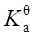 ----------------------------(
)
----------------------------(
)
(A) 增大 (B) 减小
(C) 无影响 (D) 减小至一定程度后趋于稳定
0317
在一定温度下,离子强度增大,醋酸的浓度常数 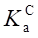
(A) 增大 (B) 减小
(C) 不变 (D) 减小至一定程度后趋于稳定
0318
一元弱酸的解离常数的两种形式──标准平衡常数与混合常数 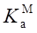
(A) > (B) <
(C) = (D) A与B均有可能
0319
已知H3AsO4的pKa1= 2.2, pKa2= 6.9, pKa3= 11.5,则在 pH=7.0时, 溶液中[H3AsO4]/[AsO43-]等于( )
(A) 100.4 (B) 10-0.4 (C) 10-5.2 (D) 10-4.8
0320
若动脉血的pH=7.40, [HCO3-] = 0.024 mol/L, 已知H2CO3的pKa1 = 6.38, pKa2 = 10.25, 则[H2CO3]为――――――――――-（ )
(A) 2.3×10-2mol/L (B) 2.3×10-3mol/L
(C) 4.6×10-2mol/L (D) 4.6×10-3mol/L
0321
在磷酸盐溶液中,HPO42-浓度最大时的pH是-----------------------------------------------( )
(已知H3PO4的解离常数pKa1 = 2.12, pKa2 = 7.20, pKa3 = 12.36)
(A) 4.66 (B) 7.20 (C) 9.78 (D) 12.36
0322
已知H3PO4的pKa1 = 2.12, pKa2 = 7.20, pKa3 = 12.36。今有一磷酸盐溶液的pH = 4.66, 则其主要存在形式是-------------------------------------------------------------------------------------( )
(A) HPO42- (B) H2PO4-
(C) HPO42- + H2PO4 (D) H2PO4-+ H3PO4
0323
已知H3PO4的pKa1 = 2.12, pKa2 = 7.20, pKa3 = 12.36。今有一磷酸盐溶液, 测得其pH = 7.0,则其主要存在形式是----------------------------------------------------------------------------------( )
(A) H3PO4+H2PO4- (B) H2PO4-+HPO42-
(C) H3PO4+HPO42- (D) HPO42-+PO43-
0324
某病人吞服10g NH4Cl 1小时后, 他血液的pH = 7.38。已知H2CO3的 pKa1 = 6.38, pKa2 = 10.25。此时他血液中[HCO3-]/[H2CO3]之比为-------------------------------------------------( )
(A) 1/10 (B) 10 (C) 1/2 (D) 2
0325
二乙三氨五乙酸( ETPA, 用HL表示)的pKa1~pKa5分别是1.94、2.87、4.37、8.69和10.56, 溶液中的H3L2-组分浓度最大时的pH是---------------------------------------------------------( )
(A) 2.87 (B) 3.62 (C) 5.00 (D) 9.62
0326
当pH = 5.00时,0.20 mol/L二元弱酸(H2A)溶液中, H2A的浓度为---------------------( )
(设H2A的pKa1 = 5.00, pKa2 = 8.00)
(A) 0.15 mol/L (B) 0.10 mol/L
(C) 0.075 mol/L (D) 0.050 mol/L
0327
有甲、乙、丙三瓶同体积同浓度的H2C2O4、NaHC2O4和Na2C2O4溶液, 若用HCl或NaOH调节至同样pH,最后补加水至同样体积,此时三瓶中[HC2O4-]的关系是--------------------( )
(A) 甲瓶最小 (B) 乙瓶最大
(C) 丙瓶最小 (D) 三瓶相等
0328
pH = 7.00的H3AsO4溶液有关组分平衡浓度的关系应该是----------------------------( )
(已知 H3AsO4 pKa1 = 2.20, pKa2 = 7.00, pKa3 = 11.50)
(A) [H3AsO4] = [H2AsO4-] (B) [H2AsO4-] = [HAsO42-]
(C) [HAsO42-] >[H2AsO4-] (D) [H3AsO4] >[HAsO42-]
0329
已知EDTA的各级解离常数分别为10-0.9、10-1.6、10-2.0、10-2.67、10-6.16和10-10.26, 在pH = 2.67~6.16的溶液中, EDTA最主要的存在形式是---------------------------------------------( )
(A) H3Y- (B) H2Y2- (C) HY3- (D) Y4-
0330
已知: H3PO4的pKa1 = 2.12, pKa2 = 7.20, pKa3 = 12.36, 调节磷酸盐溶液的pH至6.0时,其各有关存在形式浓度间的关系是------------------------------------------------------------------( )
(A) [HPO42-] > [H2PO4-] > [PO43-]
(B) [HPO42-] > [PO43-] > [H2PO4-]
(C) [H2PO4-] > [HPO42-] > [H3PO4]
(D) [H3PO4] > [H2PO4-] > [HPO42-]
0331
今有(a)NaH2PO4,(b)KH2PO4和(c)NH4H2PO4三种溶液,其浓度c(NaH2PO4) = c(KH2PO4) = c(NH4H2PO4) = 0.10mol/L, 则三种溶液的pH的关系是--------------------------------------( )
[已知 H3PO4的pKa1~pKa3分别是2.12、7.20、12.36; pKa(NH4+) = 9.26]
(A) a = b = c (B) a <b <c (C) a = b >c (D) a = b <c
0332
c(NaCl) = 0.1mol/L的NaCl水溶液的质子平衡式是-------------------------------------( )
(A) [Na+] = [Cl-] = 0.1mol/L (B) [Na+]+[Cl-] = 0.1 mol/L
(C) [H+] = [OH-] (D) [H+]+[Na+] = [OH-]+[Cl-]
0333
c(NaCl) = 0.1mol/L的NaCl水溶液的电荷平衡式是-------------------------------------( )
(A) [H+] = [OH-] (B) [Na+] = [Cl-] = 0.1 mol/L
(C) [Na+]+[Cl-] = 0.1 mol/L (D) [H+]+[Na+] = [OH-]+[Cl-]
0334
c(Na2CO3) = 0.1mol/L的Na2CO3溶液的物料平衡式是---------------------------------( )
(A) 0.1 mol/L = [CO32-] = 2[Na+]
(B) 0.1 mol/L = [CO32-]+[Na+]
(C) 0.1 mol/L = [H2CO3]+[HCO3-]+[CO32-] = [Na+]/2
(D) 0.1 mol/L = [H2CO3]+[HCO3-]+2[CO32-] = [Na+]
0335
用NaOH溶液滴定H3PO4溶液至pH = 4.7时,溶液的简化质子条件为--------------( )
(H3PO4的pKa1~pKa3分别是2.12、7.20、12.36)
(A) [H3PO4] = [H2PO4-] (B) [H2PO4-] = [HPO42-]
(C) [H3PO4] = [HPO42-] (D) [H3PO4] = 2[PO43-]
0336
于60 mL 0.10mol/L Na2CO3溶液中加入40 mL 0.15mol/L HCl溶液,所得溶液的简化质子条件是---------------------------------------------------------------------------------------------------( )
(A) [H2CO3] = [HCO3-] (B) [HCO3-] = [CO32-]
(C) [H2CO3] = [CO32-] (D) [H2CO3] = [H+]
0337
0.1 mol/L Ag(NH3)2+溶液的物料平衡式是-------------------------------------------------( )
(A) [Ag+] = [NH3] = 0.1 mol/L
(B) 2[Ag+] = [NH3] = 0.2 mol/L
(C) [Ag+]+[Ag(NH3)+]+2[Ag(NH3)2+] = 0.1 mol/L
(D) [NH3]+[Ag(NH3)+]+2[Ag(NH3)2+] = 0.2 mol/L
0338
NH4H2PO4水溶液中最主要的质子转移反应是--------------------------------------------( )
(已知H3PO4的pKa1~pKa3分别是2.12,7.20,12.36;NH3的pKb为4.74)
(A) NH4++H2PO4- = NH3 +H3PO4 (B) H2PO4-+H2PO4- = H3PO4 +HPO42-
(C) H2PO4-+H2O = H3PO4 +OH- (D) H2PO4-+H2O = HPO42- +H3O+
0339
丙二酸[CH2(COOH)2]的pKa1 = 3.04, pKa2 = 4.37, 其共轭碱的Kb1 = _______________, Kb2 = ______________________。
0340
已知H2CO3的pKa1 = 6.38, pKa2 = 10.25, 则Na2CO3的Kb1 = ___________, Kb2 = ______________。
0341
H3PO4的pKa1 = 2.12, pKa2 = 7.20, pKa3 = 12.36, 则PO43-的pKb1 =_____, pKb2 = ____, pKb3 = _______。
0342
吡啶偶氮间苯二酚(PAR)的酸解离常数pKa1 ,pKa2
,pKa3分别为3.1, 5.6, 11.9, 则其质子化常数 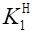 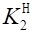 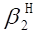 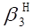
0343
已知柠檬酸(H3A)的pKa1 = 3.13, pKa2 = 4.76, pKa3 = 6.40。则其共轭碱的Kb1 = ______________ 、
Kb2
= _______________; 质子化常数 = ___________、 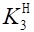
0344
HPO42-是______的共轭酸,是__________的共轭碱,其水溶液的质子条件式是_________________________________________________。
0345
草酸(H2C2O4)的pKa1和pKa2分别是1.2和4.2。请填写以下情况的pH或pH范围。
|
C2O42-为主 |
[HC2O4-]为最大值 |
[HC2O4-] = [C2O42-] |
[H2C2O4] = [C2O42-] |
|
|
|
|
|
0346
某二元弱酸H2A的pKa1 = 2.0, pKa2 = 5.0, 请填写以下情况的pH。
|
[H2A] = [HA-] |
[HA-]为最大值 |
[H2A] = [A2-] |
[HA-] = [A2-] |
|
|
|
|
|
0347
亚磷酸(H3PO3)的pKa1和pKa2分别是1.3和6.6, 其存在形式有H3PO3, H2PO3-和HPO32-三种。请说明在下列pH条件下亚磷酸存在的主要形式。
|
pH = 0.3 |
pH = 1.3 |
pH = 3.95 |
pH > 6.6 |
|
|
|
|
|
0348
已知NH3的Kb=1.8×10-5, 当NH3-NH4Cl缓冲溶液的pH=9.0时, 该溶液中 [NH3]/[NH4Cl]为______。
0349
pH为7.20的磷酸盐溶液(H3PO4的pKa1 = 2.12, pKa2 = 7.20, pKa3 = 12.36), 磷酸盐存在的主要形式为__________和____________; 其浓度比为___________________。
0350
比较以下各对溶液的pH大小(用符号 >、 = 、< 表示)
(1) 同浓度的NaH2PO4(a)和NH4H2PO4(b): (a)____(b)
(2) 同浓度的Na2HPO4(c)和(NH4)2HPO4(d): (c)____(d)
[已知pKb(NH3) = 4.74,H3PO4的pKa1~pKa3分别是 2.16,7.20,12.36]
0351
以下平衡式的英文缩写分别是(请填A,B,C)。
(1) 物料平衡式 ____ （A） PBE
(2) 电荷平衡式 ____ （B） MBE
(3) 质子平衡式 ____ （C） CBE
0352
说明以下英文缩写的含义(请填 A,B,C)。
(1) MBE ____ （A） 电荷平衡式
(2) CBE ____ （B） 质子平衡式
(3) PBE ____ （C） 物料平衡式
0353
含0.10mol/L HCl和0.20mol/L H2SO4的混合溶液的质子条件式为______________ _________________________________。
0354
60 mL 0.10 mol/L Na2CO3与40 mL 0.15 mol/L HCl相混合, 溶液的质子条件式是________________________________________________。
0355
用NaOH滴定二氯乙酸(HA, pKa = 1.3)和 NH4Cl 混合液中的二氯乙酸至化学计量点时, 其质子条件式是_______________________________________。
0356
用稀 H2SO4 溶液滴定 Na2CO3 溶液至第二化学计量点时,溶液的质子条件式是: _____________________________________________________。
0357
写出下列溶液的质子条件式:
(1) 0.1 mol/L NH4Ac溶液: ____________________________________
(2) 0.1 mol/L H2SO4溶液: ____________________________________
0358
0.1 mol/L Na2CO3 溶液中, 有关Na+的物料平衡式是______________________________ _______________________。有关CO32-的物料平衡式是____________________________ _____。
0359
0.1 mol/L (NH4)2HPO4溶液的质子条件式是____________________________________ _______。
0.1 mol/L H2SO4溶液的质子条件式是_______________________________。
0360
某(NH4)2CO3溶液c[(NH4)2CO3] = c mol/L,其物料平衡式为______________________ ______。
0361
1. 将20mL 0.10mol/L NaOH溶液和10 mL 0.10 mol/L H2SO4混合, 所得溶液的质子条件式是_________________________________________________。
2. 将20 mL 0.10 mol/L HCl 和 20 mL 0.05 mol/L Na2CO3混合, 所得溶液的质子条件式是_________________________________________________。
0362
某NH4HC2O4溶液c(NH4HC2O4) = c mol/L,其物料平衡式为_________________ _____________; 电荷平衡式为_________________________________________。
0363
某(NH4)2HPO4溶液c[(NH4)2HPO4] = c mol/L,其物料平衡式为_______________ _______________________________; 电荷平衡式为__________________________________ ________。
0364
计算以下溶液的[H+]:
(1) 0.10 mol/L NH4CN溶液
(2) 0.10 mol/L NH4A 溶液
已知 pKa(NH4+) = 9.26, pKa(HCN) = 9.21, pKa(HA) = 1.30。
0365
假设某酸碱指示剂HIn的变色pH范围为2.60, 若观察到刚显酸式(HIn)色时比率[HIn]/[In-]和碱式(In-)色时[In-]/[HIn]是相同的。当指示剂刚显酸色或碱色时,HIn或In-形体所占的百分比为多少?
0366
pKa(HCOOH) = 3.77, pKb(HCOO-) = _________; NaOH滴定HCOOH反应的Kt = ______________; HCl滴定HCOO-反应的Kt = ______________。
0401
将1.0 mol/L NaAc与0.10 mol/L H3BO3等体积混合,所得溶液pH是--------------( )
[pKa(HAc) = 4.74, pKa(H3BO3) = 9.24]
(A) 6.49 (B) 6.99 (C) 7.49 (D) 9.22
0402
用NaOH滴定某一元酸HA,在化学计量点时,[H+]的计算式是--------------------------( )
(A) 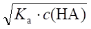 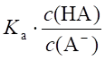
(C) 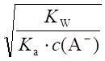 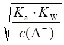
0403
EDTA的pKa1~pKa6分别是0.9,1.6,2.0,2.67,6.16和10.26。EDTA二钠盐(Na2H2Y)水溶液pH约是( )
(A) 1.25 (B) 1.8 (C) 2.34 (D) 4.42
0404
0.10 mol/L HCl和1.0 mol/L HAc(pKa = 4.74)混合液的pH为---------------------------( )
(A) 2.37 (B) 1.30 (C) 1.00 (D) 3.37
0405
pH=1.00的HCl溶液和pH=13.00 的 NaOH 溶液等体积混合,所得溶液的pH是-------------( )
(A) 14 (B) 12 (C) 7 (D) 6
0406
已知H3PO4的Ka1 = 7.6×10-3, Ka2 = 6.3×10-8, Ka3 = 4.4×10-13,若以NaOH溶液滴定H3PO4溶液,则第二化学计量点的pH约为-------------------------------------------------------( )
(A) 10.7 (B) 9.7 (C) 7.7 (D) 4.9
0407
将等体积的pH=3的HCl溶液和pH=10的NaOH溶液混合后,溶液的pH区间是-( )
(A) 3~4 (B) 1~2 (C) 6~7 (D) 11~12
0408
0.10 mol/L NH2OH(羟胺)和0.20 mol/L NH4Cl等体积混合液的pH是--------------( )
[pKb(NH2OH) = 8.04, pKb(NH3) = 4.74]
(A) 6.39 (B) 7.46 (C) 7.61 (D) 7.76
0409
以下溶液稀释10倍时pH改变最小的是--------------------------------------------------( )
(A) 0.1 mol/L NH4Ac溶液 (B) 0.1 mol/L NaAc溶液
(C) 0.1 mol/L Hac溶液 (D) 0.1 mol/L HCl溶液
0410
以下溶液稀释10倍时pH改变最大的是--------------------------------------------------( )
(A) 0.1 mol/L NaAc-0.1 mol/L HAc溶液
(B) 0.1 mol/L NH4Ac-0.1 mol/L HAc溶液
(C) 0.1 mol/L NH4Ac溶液
(D) 0.1 mol/L NaAc溶液
0411
将下表中四种溶液以水稀释10倍,请填写其pH变化大小的顺序,变化最大者为“1”、最小者为“4”。
|
溶液 |
顺序 |
|
0.1 mol/L HAc |
|
|
0.1 mol/L HAc + 0.1 mol/L NaAc |
|
|
1.0 mol/L HAc + 1.0 mol/L NaAc |
|
|
0.1 mol/L HCl |
|
0412
1.0 mol/L NH4HF2溶液的pH是-------------------------------------------------------------( )
[pKa(HF) = 3.18, pKb(NH3) = 4.74]
(A) 1.59 (B) 3.18 (C) 6.22 (D)9.26
0413
今有三种溶液分别由两组分组成:
(a) 0.10 mol/L HCl-0.20 mol/L NaAc溶液
(b) 0.20 mol/L HAc-0.10 mol/L NaOH溶液
(c) 0.10 mol/L HAc-0.10 mol/L NH4Ac溶液
则三种溶液pH的大小关系是-------------------------------------------------------------------( )
[已知pKa(HAc) = 4.74, pKa(NH4+) = 9.26]
(A) a<c<b (B) a = b<c (C) a = b>c (D) a = b = c
0414
六次甲基四胺[(CH2)6N4]缓冲溶液的缓冲pH范围是-------------------------------------( )
ípKb[(CH2)6N4] = 8.85ý
(A) 4~6 (B) 6~8 (C) 8~10 (D) 9~11
0415
下列盐的水溶液缓冲作用最强的是---------------------------------------------------------( )
(A) NaAc (B) Na2CO3
(C) Na2B4O7・10H2O (D) Na2HPO4
0416
今欲用Na3PO4与HCl来配制pH = 7.20的缓冲溶液,则Na3PO4与HCl物质的量之比n(Na3PO4)∶n(HCl)应当是----------------------------------------------------------------------------( )
(H3PO4的pKa1~pKa3分别是2.12,7.20,12.36)
(A) 1:1 (B) 1:2 (C) 2:3 (D) 3:2
0417
今欲用H3PO4与Na2HPO4来配制pH = 7.2的缓冲溶液,则H3PO4与Na2HPO4物质的量之比n(H3PO4)∶n(Na2HPO4)应当是---------------------------------------------------------------( )
(H3PO4的pKa1~pKa3分别是2.12,7.20,12.36)
(A) 1:1 (B) 1:2 (C) 1:3 (D) 3:1
0418
今欲用H3PO4与NaOH来配制pH = 7.20的缓冲溶液,则H3PO4与NaOH物质的量之比 n(H3PO4)∶n(NaOH)应当是--------------------------------------------------------------------------( )
(H3PO4的pKa1~pKa3分别是2.12,7.20,12.36)
(A) 1:1 (B) 1:2 (C) 2:1 (D) 2:3
0419
今欲配制一pH=7.20的缓冲溶液,所用 0.10 mol/L H3PO4和0.10 mol/L NaOH溶液的体积比是-( )
(H3PO4的pKa1~pKa3分别是2.12,7.20,12.36)
(A) 1:3 (B) 3:1 (C) 2:3 (D) 3:2
0420
欲配制pH=5.1的缓冲溶液,最好选择--------------------------------------------------------( )
(A) 一氯乙酸(pKa = 2.86) (B) 氨水(pKb = 4.74)
(C) 六次甲基四胺(pKb = 8.85) (D) 甲酸(pKa = 3.74)
0421
欲配制pH=9的缓冲溶液,应选用---------------------------------------------------------------( )
(A) NH2OH(羟氨) (Kb = 9.1×10-9)
(B) NH3・H2O (Kb = 1.8×10-5)
(C) CH3COOH (Ka = 1.8×10-5)
(D) HCOOH (Ka = 1.8×10-4)
0422
选择下列溶液[H+]的计算公式(请填A,B,C)
(1) 0.10 mol/L 二氯乙酸 (pKa = 1.30) __________
(2) 0.10 mol/L NH4Cl (pKa = 9.26) __________
(3) 0.10 mol/L NaHSO4 (pKa2 = 1.99) __________
(4) 1.0×10-4mol/L H3BO3 (pKa = 9.24) __________
（A） 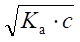 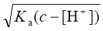 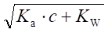
0423
选择下列溶液[H+]计算公式(请填A,B)
(1) 0.04 mol/L H2CO3溶液 __________
(2) 0.05 mol/L NaHCO3溶液 __________
(3) 0.10 mol/L 氨基乙酸溶液 __________
(4) 0.10 mol/L 氨基乙酸盐酸盐溶液 __________
(A) [H+]
= 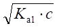
0424
选择[H+]的计算公式(请填A,B,C,D)
1. 0.1000 mol/L HCl滴定0.1000 mol/L Na2CO3至第一化学计量点--------------------( )
2. 0.05000 mol/L NaOH滴定0.05000 mol/L H3PO4至第一化学计量点----------------( )
3. 0.1 mol/L HAc-0.1 mol/L H3BO3混合液---------------------------------------------------( )
4. 0.1 mol/L HCOONH4溶液--------------------------------------------------------------------( )
(A) [H+] = 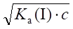 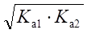
(C) [H+] = 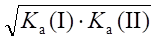 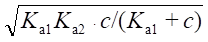
0425
写出计算以下溶液[H+]或[OH-]的公式
0.10 mol/L 三乙醇胺(pKb = 6.24) ______________
0.10 mol/L 邻苯二甲酸氢钾(pKa1 = 2.95,pKa2 = 5.41) ______________
0.10 mol/L H2C2O4(pKa1 = 1.22, pKa2 = 4.19) ______________
0426
某三元酸(H3A)的解离常数为pKa1 = 3.96, pKa2 = 6.00, pKa3 = 10.02, 则0.10 mol/L H3A溶液的pH为_______, 0.10 mol/L Na3A溶液的pH为 ___________。
0427
用HCl滴定硼砂(Na2B4O7・10H2O)的反应式为_____________________, 其化学计量点[H+]的计算式为__________________。若c(Na2B4O7) = 0.050 mol/L, c(HCl) = 0.10 mol/L,其化学计量点pH是___。
[pKa(H3BO3) = 9.24]
0428
某三元酸(H3A)的解离常数为Ka1 = 1.1×10-2, Ka2 = 1.0×10-6, Ka3 = 1.2×10-11, 则0.10 mol/L NaH2A溶液的pH为________, 0.10 mol/L Na2HA 溶液的pH为_______。(只要求近似计算)
0429
0.10 mol/L NH4Ac溶液的pH为________________________
0.10 mol/L NH4CN溶液的pH为________________________
[已知pKa(HAc) = 4.74, pKb(NH3) = 4.74, pKa(HCN) = 9.21]
0430
已知EDTA的pKa1~pKa6分别是0.9,1.6,2.0,2.67,6.16和10.26, 0.10 mol/L EDTA二钠盐(Na2H2Y・2H2O)溶液的pH是______________, [Y]为______________mol/L。
0431
0.10 mol/L Na2HPO4溶液的近似pH为_________________
0.10 mol/L NaH2PO4溶液的近似pH为_________________
(已知 H3PO4的pKa1 = 2.12, pKa2 = 7.20, pKa3 = 12.36)
0432
对于某一给定的缓冲体系,缓冲容量的大小与__________和_________有关。
0433
某溶液中弱酸的浓度为c(HA),其共轭碱的浓度为c(A-), 该溶液的最大缓冲容量(bmax)应等于______________________________。(写出计算式)
0434
0.20 mol/L NH3 [pKb(NH3) = 4.74]溶液与0.10 mol/L HCl溶液等体积混合后,溶液的pH是___。
0435
20 mL 0.50 mol/L H3PO4溶液与5.0 mL 1.0 mol/L的Na3PO4溶液相混合后, 其pH是_____。(H3PO4的pKa1~pKa3分别是2.12,7.20,12.36)
0436
10 g(CH2)6N4加入到4.0 mL 12 mol/L HCl溶液中,稀释至100 mL后, 其 pH 值为__________。
{Mr[(CH2)6N4] = 140.0, pKb[(CH2)6N4] = 8.85}
0437
在1 L 0.10 mol/L HAc溶液中加入_________ g NaAc后, 溶液pH = 5.04。
[pKa(HAc) = 4.74, Mr(NaAc) = 82.03]
0438
25 mL 0.40 mol/L H3PO4溶液和30 mL 0.50 mol/L Na3PO4溶液混合并稀释至 100mL,此溶液的pH是__________。 (H3PO4的pKa1~pKa3分别是2.12,7.20,12.36)
0439
比较以下各对溶液的pH的大小(用>、 = 、<符号表示)
(1)浓度相同的NaAc和NH4Ac溶液 ____________
(2)浓度相同的HAc-NaAc和HAc-NH4Ac缓冲溶液 ____________
[pKa(HAc) = 4.74, pKb(NH3) = 4.74]
0440
(CH2)6N4(六次甲基四胺)的pKb = 8.9,由(CH2)6N4-HCl组成的缓冲溶液的缓冲范围是___________,欲配制具有bmax的该种缓冲溶液,应于100 mL 0.1 mol/L(CH2)6N4溶液中加入__________mL 1 mol/L HCl。
0441
欲配制pH = 5.5 总浓度为 0.20 mol/L 的六次甲基四胺[(CH2)6N4]缓冲溶液 500 mL,应称取(CH2)6N4___________ g,量取12 mol/L HCl __________mL。
{Mr[(CH2)6N4] = 140.0, pKb[(CH2)6N4] = 8.85}
0442
在以下纯两性物溶液中,能作为标准缓冲溶液的是----------------------------------------( )
(A) NaH2PO4 (B) Na2HPO4
(C) 氨基乙酸偶极离子 (D) 酒石酸氢钾
已知:
|
|
pKa1 |
pKa2 |
pKa3 |
|
H3PO4 |
2.12 |
7.20 |
12.36 |
|
氨基乙酸 |
2.35 |
9.60 |
|
|
酒石酸 |
3.04 |
4.37 |
|
0443
将5 mmol 乙二胺四乙酸(H4Y)加入到1 L 5.0×10-3mol/L乙二胺四乙酸钠(Na4Y)和5.0×10-3 mol/L NaOH溶液中。计算溶液的pH和乙二胺四乙酸五种形式的浓度之比(忽略H5Y+和H6Y2+)
(H4Y的lgb1~lgb4分别是10.26,16.42,19.09和21.09)
0444
某一溶液由HCl,KH2PO4和HAc混合而成,其浓度分别为c(HCl) = 0.10 mol/L, c(KH2PO4) = 1.0×10-3mol/L, c(HAc) = 2.0×10-6mol/L 。计算该溶液的pH及[Ac-],[PO43-]各为多少?
(已知H3PO4的pKa1~pKa3分别是2.12,7.20, 12.36, HAc 的pKa = 4.74)
0445
将0.12 mol/L HCl与0.10 mol/L ClCH2COONa等体积混合, 试计算该溶液的 pH。(已知ClCH2COOH的Ka = 1.4×10-3)
0446
在400 mL水中加入6.2 g NH4Cl(忽略其体积变化)和45 mL 1.0 mol/L NaOH 溶液, 此混合溶液的pH是多少? 缓冲容量多大? (Mr(NH4Cl) = 53.5, NH3的 pKb = 4.74)
0447
某分析工作者欲配制pH = 0.64的缓冲溶液。称取纯三氯乙酸(CCl3COOH) 16.3 g,溶于水后,加入2.0 g固体NaOH,溶解后以水稀至1 L.试问:
(1) 实际上所配缓冲溶液的pH为多少?
(2) 若要配制pH = 0.64的三氯乙酸缓冲溶液,需加入多少摩尔强酸或强碱?
[已知Mr(CCl3COOH) = 163.4, Ka(CCl3COOH) = 0.23, Mr(NaOH) = 40.0]
0448
今欲配制pH为7.50的磷酸缓冲液1 L,要求在50 mL此缓冲液中加入5.0 mL 0.10 mol/L的HCl后pH为7.10, 问应取浓度均为0.50 mol/L的H3PO4和NaOH溶液各多少毫升?(H3PO4的pKa1~pKa3分别是2.12,7.20,12.36)
0449
欲将100ml 0.10 mol/L HCl溶液的pH从1.00增加至4.44时,需加入固体醋酸钠(NaAc)多少克(不考虑加入NaAc后溶液体积的变化)? [Mr(NaAc) = 82.0, pKa(HAc) = 4.74]
0450
欲配制氨基乙酸总浓度为0.10 mol/L的缓冲溶液100 mL,使其溶液的pH为2.00,需氨基乙酸多少克?需加入1.0 mol/L的强酸或强碱多少毫升?
已知氨基乙酸盐H2A+的Ka1 = 4.5×10-3, Ka2 = 2.5×10-10, Mr(NH2CH3COOH) = 75.07。
0451
为配制pH为7.20的磷酸盐缓冲溶液(总浓度为1 mol/L)500 mL, 应取1.0 mol/L H3PO4和1.0 mol/L Na2HPO4溶液各几毫升? (H3PO4的pKa1~pKa3分别为2.12、7.20、12.36)
0452
将0.20 mol/L NH4Cl ─ 0.20 mol/L NH3 溶液与0.020 mol/L HAc ─ 0.020 mol/L NaAc溶液等体积混合,计算混合后溶液的pH。
0453
今由某弱酸HB及其共轭碱配制缓冲溶液,已知其中共轭酸 [HB] = 0.25mol/L。于此100 mL缓冲溶液中加入200 mg的固体NaOH(忽略体积的变化)后,所得溶液的pH为5.60 。问原来所配制的缓冲溶液的pH为多少? [Mr(NaOH) = 40.0, Ka(HB) = 5.0×10-6]
0454
若将0.10 mol/L HAc溶液和0.20 mol/L NaOH溶液直接混合,配制成pH为5.20 的缓冲溶液1 L,问需加入上述溶液各多少毫升? [已知pKa(HAc) = 4.74]
0455
已知质子化乙二胺盐酸盐(以H2en2+表示)的pKa1= 6.85, pKa2= 9.93, 欲配制1L pH=6.55、总浓度为0.15 mol/L的乙二胺盐酸盐缓冲溶液,需加入固体NaOH多少克? [已知Mr(NaOH) = 40.00]
0456
0.60 mol/L HCl溶液与1.8 mol/L氨基乙酸溶液等体积混合后,该溶液的pH是多大?
(pKa1 = 2.35, pKa2 = 9.78)
0457
为配制pH为4.00和5.00的HAc-Ac-缓冲溶液,问分别应往100 mL 0.30 mol/L HAc溶液中加入多少毫升2.0 mol/L NaOH溶液? (HAc的pKa = 4.74)
0458
取10 mL pH = 4.74的醋酸缓冲溶液,加至某分析操作液中, 使其总体积为100 mL,如果要求该操作液具有最大缓冲容量0.10 mol/L,那么欲配制500 mL此缓冲溶液需取冰醋酸(17 mol/L)多少毫升? 需醋酸钠NaAc・3H2O多少克? [Mr(NaAc・3H2O) = 136, pKa(HAc) = 4.74]
0459
计算以下各溶液的pH:
(1) 20 mL 0.10 mol/L HCl溶液与20 mL 0.10 mol/L HAc混合
(2) 0.20 mL 0.10 mol/L HCl溶液与20 mL 0.10 mol/L HAc相混合
[pKa(HAc) = 4.74]
0460
0.10 mol/L NaOH与0.050 mol/L H2SO4等体积混合,计算溶液pH。 (H2SO4的pKa2 = 1.99)
0461
用0.1000 mol/L NaOH溶液滴定0.05000 mol/L H2SO4,计算滴定分数T 分别为 0 和 1.00 时溶液的pH (H2SO4的pKa2 = 1.99)。
0462
用0.020 mol/L EDTA滴定同浓度的25 mL Zn2+溶液, 滴定开始时pH = 5.50, 希望滴定终了时溶液pH下降不到0.30。若采用HAc-Ac-缓冲溶液,加入量为5 mL, 问若配此溶液1 L,应加多少克NaAc・3H2O和多少毫升冰醋酸{c[HAc(l)] = 17 mol/L}? [pKa(HAc) = 4.74, Mr(NaAc・3H2O) = 136]
0463
用0.020 mol/L EDTA滴定25 mL pH为1.0的含Bi3+、Zn2+的混合溶液(浓度均为0.020 mol/L),在滴定Bi3+后,为调节pH至5.5以滴定Zn2+, 应当加入六次甲基四胺多少克? Zn2+滴定终了时溶液pH又是多少? {pKb[(CH2)6N4] = 8.87, Mr[(CH2)6N4] = 140 }
0464
需要制备200mL pH = 9.49的NH3-NH4Cl缓冲溶液,且使该溶液在加入1.0 mmol 的HCl或NaOH时pH的改变不大于0.12, 制备该缓冲液时需用多少克的NH4Cl和多少毫升1.0 mol/L氨水?
[pKb(NH3) = 4.74, Mr(NH4Cl) = 53.49]
0465
今有一混合碱液CH3NH2-(CH2)6N4, 浓度均约0.1 mol/L, 能否用酸碱滴定法直接测定CH3NH2浓度(允许误差0.5％),说明判断根据。若能,采用同浓度HCl标准溶液滴定,计算化学计量点的pH。
{pKb(CH3NH2) = 3.38, pKb[(CH2)6N4] = 8.85}
0466
由某弱碱BOH及其盐BCl配制成缓冲溶液,使其pH = 10.00。当向140 mL此缓冲溶液中加入60 mL 1.0 mol/L HCl溶液后,缓冲溶液的pH变化至9.00。计算原来所配制的缓冲溶液中, BOH及BCl的平衡浓度各为多少?[设Kb(BOH) = 5.0×10-5]
0501
将浓度相同的下列溶液等体积混合后,能使酚酞指示剂显红色的溶液是-------------( )
(A) 氨水+醋酸 (B) 氢氧化钠+醋酸
(C) 氢氧化钠+盐酸 (D) 六次甲基四胺+盐酸
0502
将甲基橙指示剂加到一无色水溶液中,溶液呈黄色,该溶液的酸碱性为---------------( )
(A) 中性 (B) 碱性 (C) 酸性 (D) 不能确定其酸碱性
0503
强酸滴定弱碱,以下指示剂中不适用的是----------------------------------------------------( )
(A) 甲基橙 (B) 甲基红 (C) 酚酞 (D) 溴酚蓝 (pT = 4.0)
0504
将酚酞指示剂加到某无色溶液中,溶液仍无色,表明溶液酸碱性为---------------------( )
(A) 酸性 (B) 中性 (C) 碱性 (D) 不能确定其酸碱性
0505
某酸碱指示剂的K(HIn)为1.0×10-5,其变色点pH为_________,理论变色范围为____________。
0506
用0.1 mol/L HCl滴定0.1 mol/L NH3水(pKb = 4.7)的pH突跃范围为6.3~4.3, 若用0.1 mol/L HCl滴定0.1 mol/L pKb = 2.7的某碱, pH突跃范围为-----------------------------------( )
(A) 6.3~2.3 (B) 8.3~2.3 (C) 8.3~4.3 (D) 4.3~6.3
0507
在下列多元酸或混合酸中,用NaOH溶液滴定时出现两个滴定突跃的是-------------( )
(A) H2S (Ka1 = 1.3×10-7, Ka2 = 7.1×10-15)
(B) H2C2O4 (Ka1 = 5.9×10-2, Ka2 = 6.4×10-5)
(C) H3PO4 (Ka1 = 7.6×10-3, Ka2 = 6.3×10-8,Ka3 = 4.4×10-13 )
(D) HCl+一氯乙酸 (一氯乙酸的Ka = 1.4×10-3)
0508
用0.1 mol/L HCl滴定0.1 mol/L NaOH的突跃范围为9.7~4.3, 则0.01 mol/L HCl滴定0.01 mol/L NaOH的突跃范围应为-------------------------------------------------------------------( )
(A) 9.7~4.3 (B) 8.7~4.3 (C) 8.7~6.3 (D) 10.7~3.3
0509
用0.1 mol/LNaOH溶液滴定0.1 mol/L pKa = 4.0的弱酸, 突跃范围为7.0~9.7, 则用0.1 mol/L NaOH滴定0.1 mol/L pKa = 3.0的弱酸时突跃范围为-----------------------------------( )
(A) 6.0~9.7 (B) 6.0~10.7 (C) 7.0~8.7 (D) 8.0~9.7
0510
以同浓度NaOH溶液滴定某一元弱酸(HA),若将酸和碱的浓度均增大10倍, 两种滴定pH相同时所相应的中和百分数是----------------------------------------------------------------( )
(A) 0 (B) 50 (C) 100 (D) 150
0511
用NaOH标准溶液滴定一元弱酸时,若弱酸和NaOH的浓度都比原来增大十倍,则滴定曲线中-( )
(A) 化学计量点前后0.1%的pH均增大 . (C) 化学计量点前0.1%的pH不变,后0.1%的pH增大
(B) 化学计量点前后0.1%的pH均减小 . (D) 化学计量点前0.1%的pH减小,后0.1%的pH增大
0512
用0.10 mol/LNaOH溶液滴定0.10 mol/L HA(Ka=5.0×10-5), 若终点的pH为9.0, 则终点误差为( )
(A) +0.02% (B) +0.01% (C) -0.02% (D) -0.01%
0513
以下叙述正确的是-------------------------------------------------------------------------------( )
(A) 用NaOH滴定HCl, 选甲基橙为指示剂的终点误差是正值
(B) 用HCl滴定NaOH, 选酚酞为指示剂的终点误差为正值
(C) 用蒸馏法测NH4+, 若采用HCl吸收NH3,以NaOH返滴至pH为7, 终点误差为负值
(D) 用蒸馏法测NH4+, 若采用H3BO3吸收NH3,以HCl滴定至甲基橙变色, 终点误差为负值
0514
用NaOH标准溶液滴定0.1mol/LHCl-0.1mol/L H3PO4混合液,在滴定曲线上出现几个突跃------( )
(A) 1 (B) 2 (C) 3 (D) 4
0515
下图为用HCl滴定Na2CO3的滴定曲线。若a点时溶液中占优势的形体为CO32-,试指出以下各点占优势的形体(填A,B,C或D)。
(1) b点 _____ （A） [HCO3-] = [CO32-] (2) c点 _____ （B） [HCO3-]
(3) d点 _____ （C） [HCO3-] = [H2CO3] (4) e点 _____ （D） [H2CO3]
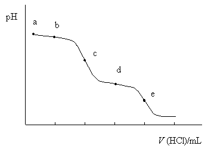
0516
用0.2 mol/L NaOH溶液滴定0.2 mol/L HCl和0.2 mol/L柠檬酸(H3A)的混合液(H3A的Ka1 = 7.4×10-4, Ka2 = 1.7×10-5, Ka3 = 4.0×10-7), 如果允许滴定误差为0.2%,则终点时溶液组成应为------------------( )
(A) NaCl+H3A (B) NaCl+NaH2A (C) NaCl+Na2HA (D) NaCl+Na3A
0517
测定(NH4)2SO4中的氮时,不能用NaOH标准溶液直接滴定,这是因为----------------( )
(A) NH3 的Kb太小 (B) (NH4)2SO4不是酸
(C) NH4+的Ka太小 (D) (NH4)2SO4中含游离H2SO4
0518
已知甲基橙pK(HIn) = 3.4,当溶液pH = 3.1时[In-]/[HIn]的比值为____________; 溶液pH = 4.4时[In-]/[HIn]的比值为_________; 依通常计算指示剂变色范围应为pH = pK(HIn)±1,但甲基橙变色范围与此不符,这是由于_________________________。
0519
0.1 mol/L HCl滴定20.00 mL相同浓度NH3的滴定曲线如下图,
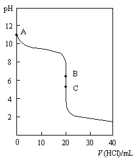
写出曲线上A,B,C三点滴定体系的组成和[H+]的计算式。
|
点 |
V(HCl)/mL |
体系的组成 |
[H+]的计算式 |
|
A |
0.00 |
|
|
|
B |
19.98 |
|
|
|
C |
20.02 |
|
|
0520
0.1 mol/L NaOH溶液滴定20.00 mL相同浓度HCl的滴定曲线如下图,
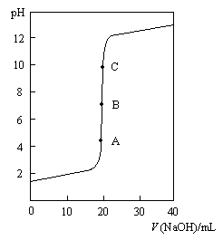
请写出曲线中A,B,C三点滴定体系的组成和[H+]的计算式。
|
点 |
V(NaOH)/mL |
体系的组成 |
[H+]的计算式 |
|
A |
19.98 |
|
|
|
B |
20.00 |
|
|
|
C |
20.02 |
|
|
0521
0.1 mol/L NaOH溶液滴定20.00 mL相同浓度HAc的滴定曲线如下图,
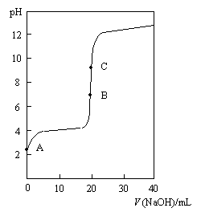
写出曲线上A,B,C三点滴定体系的组成和[H+]的计算式。
|
点 |
V(NaOH)/mL |
体系的组成 |
[H+]的计算式 |
|
A |
0.00 |
|
|
|
B |
19.98 |
|
|
|
C |
20.00 |
|
|
0522
0.1 mol/L HCl滴定20.00 mL Na2CO3的滴定曲线如下图,
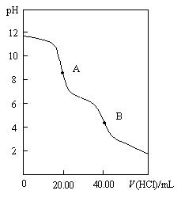
写出曲线上A、B两点滴定体系的组成和[H+]的计算式。
|
点 |
V(HCl)/mL |
体系的组成 |
[H+]的计算式 |
|
A |
20.00 |
|
|
|
B |
40.00 |
|
|
0523
下图滴定曲线的类型是___________________________。
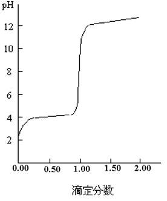
宜选用的指示剂是________________________。
0524
用HCl标准溶液滴定NH3,分别以甲基橙和酚酞作指示剂, 耗用的HCl体积分别以V(甲基橙)与V(酚酞)表示,则V(甲基橙)与V(酚酞)的关系是:________; 若是用NaOH标准溶液滴定HCl时则是__________。 (以“«”，“»”或“≈”来表示)
0525
用0.1 mol/L HCl滴定0.1 mol/L某二元碱 Na2B(pKb1 = 2, pKb2 = 3), 滴定过程中有_____个突跃, 终点产物是__________,可用___________作指示剂。
0526
用0.1 mol/L NaOH溶液滴定0.1 mol/L某二元酸H2A ( pKa1 = 2.70, pKa2 = 6.00 ), 有______个突跃,这是因为____________。化学计量点时计算[H+]的公式为 ________________,可选用__________指示剂。
0527
在下列滴定体系中,请选用适宜的指示剂:(从甲基橙、甲基红、酚酞中选择)
(1) 0.01 mol/L HCl滴定0.01 mol/L NaOH ______________
(2) 0.1 mol/L HCl滴定0.1 mol/L NH3 ______________
(3) 0.1 mol/L HCl滴定Na2CO3至第二化学计量点 ______________
(4) 0.1 mol/L NaOH滴定H3PO4至第二化学计量点 ______________
0528
下列滴定中各选什么指示剂为宜?
(1) 用0.1 mol/L HCl 溶液滴定0.05 mol/L Na2CO3 ___________
(2) 用0.1 mol/L NaOH溶液滴定0.05 mol/L 酒石酸 ___________
(3) 用0.1 mol/L NaOH溶液滴定 0.1 mol/L HCl ___________
(4) 用0.1 mol/L NaOH溶液滴定0.1 mol/L H3PO4(滴定至H2PO4-) ___________
0529
根据下表所给数据,判断在以下滴定中化学计量点及其前后0.1%的pH。
|
滴定体系 |
pＨ |
||
|
化学计量点 前0.1% |
化学 计量点 |
化学计量点 后0.1% |
|
|
NaOH滴定HCl(0.1 mol/L) |
4.3 |
7.0 |
9.7 |
|
NaOH滴定HCl(1 mol/L) |
|
|
|
|
HCl滴定NaOH(0.01 mol/L) |
|
|
|
0530
根据下表所给数据,推断在下列滴定中化学计量点及其前后0.1%的pH。 (浓度均为0.1 mol/L)
|
滴定体系 |
pＨ |
||
|
化学计量点 前0.1% |
化学 计量点 |
化学计量点 后0.1% |
|
|
NaOH滴定HCl |
4.3 |
7.0 |
9.7 |
|
NaOH滴定HA |
|
8.7 |
|
|
HCl滴定B |
|
5.3 |
|
0531
根据下表所给数据推断用NaOH滴定HAc至下列各点的pH。
|
浓度 |
pＨ |
||
|
化学计量点 前0.1% |
化学 计量点 |
化学计量点 后0.1% |
|
|
0.1 mol/L |
7.7 |
8.7 |
9.7 |
|
0.01 mol/L |
|
|
|
0532
根据下表所给数据,推断用NaOH滴定H3A至第一化学计量点及其前后0.5%的pH。
|
浓度 |
pＨ |
||
|
化学计量点 前0.5% |
化学 计量点 |
化学计量点 后0.5% |
|
|
0.1 mol/L |
4.3 |
4.6 |
4.9 |
|
1 mol/L |
|
|
|
0533
用NaOH滴定0.1 mol/L一元酸,请完成下表。
|
HB |
pＨ |
||
|
99.9% |
100.0% |
100.1% |
|
|
HCl |
4.3 |
7.0 |
9.7 |
|
HA(Ka≈10-5) |
|
8.8 |
|
|
HB(Ka≈10-7) |
|
9.8 |
10.0 |
0534
用0.1000 mol/L NaOH滴定25.00 mL 0.1000 mol/L HCl,若以甲基橙为指示剂滴定至pH = 4.0为终点,其终点误差Et = _______________%。
0535
若以0.100 mol/L NaOH溶液滴定20.0 mL浓度均为0.100 mol/L盐酸羟胺(NH3+OH・Cl-)和NH4Cl的混合溶液中的盐酸羟胺。
(1) 计算化学计量点时溶液的pH；
(2) 化学计量点时有百分之几的NH4Cl参加了反应? 滴定能否准确进行?
[已知 羟胺Kb(NH2OH) = 9.1×10-9, NH3的Kb = 1.8×10-5]
0536
用0.10 mol/L NaOH溶液滴定0.10 mol/L 二氯乙酸(简写成HA), 若溶液中还含有 0.010 mol/L NH4Cl, 计算化学计量点的pH和过量0.1%的pH。 [pKa(HA) = 1.30, pKa(NH4+) = 9.26]
0537
0.20 mol/L某二元酸(H2A)溶液,用等浓度的NaOH标准溶液滴定,计算滴定至第一个化学计量点的pH?(设H2A的Ka1 = 4.0×10-4,Ka2 = 2.5×10-9)
0538
计算以0.20 mol/L Ba(OH)2溶液滴定0.10 mol/L HCOOH溶液至化学计量点时,溶液的pH为多少? [Ka(HCOOH) = 2.0×10-4]
0539
用0.10 mol/L NaOH溶液滴定同浓度邻苯二甲酸氢钾(简写成KHP)。计算化学计量点及其前后0.1%的pH。 (H2P的pKa1 = 2.95, pKa2 = 5.41)
0540
0.1000 mol/L NaOH溶液滴定20.00 mL 0.05000 mol/L H2C2O4,计算:
(1) 化学计量点前0.1%的pH (2) 化学计量点的pH
(3) 化学计量点后0.1%的pH (H2C2O4的pKa1 = 1.25, pKa2 = 4.29)
0541
以0.20 mol/L NaOH溶液滴定0.20 mol/L HAc和0.40 mol/L H3BO3的混合溶液至pH为6.20,计算终点误差。 [Ka(HAc) = 1.8×10-5, Ka(H3BO3) = 5.8×10-10 ]
0542
以0.10 mol/L NaOH溶液滴定0.10 mol/L HCl和0.20 mol/L H3BO3的混合溶液。
(1) 计算化学计量点时溶液的pH;
(2) 若滴定终点pH比化学计量点高0.5，计算终点误差。 [Ka(H3BO3) = 5.8×10-10]
0543
用0.10 mol/L HCl滴定0.10 mol/L NaOH, 而NaOH试液中还含有0.10 mol/L NaAc, 计算:
(1) 化学计量点及化学计量点前后0.1%的pH
(2) 滴定至pH = 7.0时的终点误差 [pKa(HAc) = 4.74]
0544
用0.20 mol/L NaOH滴定0.20 mol/L HCl(其中含有0.10 mol/L NH4Cl)。
(1) 计算化学计量点的pH;
(2) 若滴定至pH = 7.0, 问终点时有百分之几的NH4+变为NH3;
(3) 此时终点误差是多少? [pKa(NH4+)为9.26]
0545
应用酸碱滴定法测定含磷物质。试样经处理使成可溶性磷酸盐后, 再转化为(NH4)2HPO4・12MoO3・H2O沉淀, 此沉淀经过滤洗涤后用过量的NaOH标准溶液(已知浓度和体积)溶解,然后再用HNO3标准溶液返滴定,用酚酞为指示剂,滴定至红色刚刚褪去(pH»8.0)。试计算滴定终点时, NH3、HPO42-、H2PO4-和MoO42-各组分的分布系数。从上述计算结果指出该方法测定磷时终点误差是多少?
这一滴定反应的反应式为:
(NH4)2HPO4・12MoO3+24OH- = 12MoO42-+HPO42-+2NH4++12H2O
[pKb(NH3) = 4.75, pKa(HMoO4-) = 3.75, H3PO4的pKa1~pKa3分别是 2.16, 7.21, 12.32]
0546
硼酸(以HA表示)是一种很弱的酸(pKa = 9.2),不能用 NaOH 直接滴定,但若加入足量的甘露醇(以R表示)使之生成络合物R2A-, 则可准确滴定。 若用 0.020 mol/L NaOH滴定0.020 mol/L 硼酸,[R]终= 0.20 mol/L。
试计算: (1) 此条件硼酸的解离常数Ka¢;
(2) 化学计量点时溶液的pH;
(3)若终点比化学计量点高0.5pH, 终点误差多大? (已知R2A-络合物的lgb1 = 2.5, lgb2 = 4.8)
0547
若滴定剂与被测物溶液浓度均增大十倍, NaOH滴定HCl的滴定突跃__________, NaOH滴定HAc的滴定突跃________________ , NaOH滴定H3PO4(至H2PO4-)的滴定突跃_______________。(填pH增加多少、减少多少或不变)
0548
用0.10 mol/L NaOH滴定同浓度的甲酸(HA),计算化学计量点的pH及选甲基红为指示剂(终点时pH为6.2)时的终点误差。[pKa(HA) = 3.74]
0549
用0.10 mol/L NaOH滴定同浓度的一元弱酸HA(pKa = 7.0),计算化学计量点的pH,若以酚酞为指示剂(终点时pH为9.0), 计算终点误差。
0550
用0.10 mol/L NaOH滴定同浓度的H2SO4,计算化学计量点的pH及选甲基橙为指示剂(终点时pH为4.4)的终点误差。(H2SO4的pKa2 = 1.99)
0551
用0.10 mol/L HCl滴定同浓度的CH3NH2溶液,计算化学计量点的pH;若选甲基橙为指示剂(终点时pH为4.0),计算终点误差。[pKb(CH3NH2) = 3.38]
0552
用0.020 mol/L HCl滴定20.00 mL 0.020 mol/L Ba(OH)2,计算化学计量点前后0.1%的pH,若选甲基橙为指示剂(终点时pH为4.0),计算终点误差。
0553
某甲测定HAc的浓度。移取25.00 mL试液,用0.1010 mol/L 的 NaOH 滴定至甲基橙变黄(pH = 4.4)消耗了7.02 mL, 由此计算HAc浓度为0.02836 mol/L。
某乙指出甲的错误是选错指示剂,并作如下校正,以求得HAc的准确浓度:
pH = 4.4时, 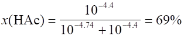
c(HAc) = 0.02836×100/31 = 0.09148(mol/L)
你认为乙的方法是否正确?为什么?
0601
在下列溶液中能用NaOH标准溶液直接滴定的是 (Et≤0.1％) ------------------------( )
(A) 0.1mol/L NH2OH・HCl(盐酸羟胺) [pKb(NH2OH) = 8.04]
(B) 0.1mol/L NH4Cl(氯化铵) [pKa(NH4+) = 9.26]
(C) 0.1mol/L (CH2)6N4(六次甲基四胺) {pKb[(CH2)6N4] = 8.85}
(D) 0.1mol/L C5H5N(吡啶) [pKb(C5H5N) = 8.87]
0602
以甲基红为指示剂,能用NaOH标准溶液准确滴定的酸是------------------------------( )
(A) 甲酸 (B) 硫酸 (C) 乙酸 (D) 草酸
0603
下列溶液用酸碱滴定法能准确滴定的是-----------------------------------------------------( )
(A) 0.1 mol/L HF (pKa = 3.18) (B) 0.1 mol/L HCN (pKa = 9.21)
(C) 0.1 mol/L NaAc [pKa(HAc) = 4.74] (D) 0.1 mol/L NH4Cl [pKb(NH3) = 4.75]
0604
下列滴定(浓度均为0.1 mol/L)中可行的是---------------------------------------------------( )
已知pKa(HA) = 4.85, pKa(HB) = 9.3, pKb(MOH) = 8.70, pKb(ROH) = 3.80
(A) HCl滴定A- (B) NaOH滴定R+ (C) HCl滴定MOH (D) HCl滴定B-
0605
以下各混合酸(或碱)中,能准确滴定其中强酸(或强碱)的是------------------------------( )
(浓度均为0.1 mol/L)
(A) HCl+一氯乙酸 (pKa = 2.86) (B) HCl+HAc (pKa = 4.74)
(C) HCl+NH4Cl (pKa = 9.26) (D) NaOH+NH3
0606
已知甲胺的pKb为3.38, 苯胺pKb为9.38, 甲酸的pKa为3.74,以下混合液(浓度均为0.1 mol/L)能用中和法准确滴定画线组分的是-------------------------------------------------------( )
(A) NaOH - 甲胺 (B) NaOH - 苯胺 (C) HCl - 甲酸 (D) HCl - FeCl3
0607
现有一含H3PO4和NaH2PO4的溶液,用NaOH标准溶液滴定至甲基橙变色, 滴定体积为a(mL)。同一试液若改用酚酞作指示剂, 滴定体积为b(mL)。则a 和b的关系是-----( )
(A) a>b (B) b = 2a (C) b>2a (D) a = b
0608
用双指示剂法测定可能含有NaOH及各种磷酸盐的混合液。现取一定体积的该试液,用HCl标准溶液滴定,以酚酞为指示剂,用去HCl 18.02 mL。然后加入甲基橙指示剂继续滴定至橙色时,又用去20.50mL,则此溶液的组成是-------------------------------------------------------( )
(A) Na3PO4 (B) Na2HPO4 (C) NaOH+Na3PO4 (D) Na3PO4+Na2HPO4
0609
某溶液可能含有NaOH和各种磷酸盐,今用一HCl标准溶液滴定,以酚酞为指示剂时, 用去 12.84 mL, 若改用甲基橙为指示剂则需 20.24 mL, 此混合液的组成是----------------( )
(A) Na3PO4 (B) Na3PO4+NaOH (C) Na3PO4+Na2HPO4 (D) Na2HPO4+NaH2PO4
0610
某一NaOH和Na2CO3混合液,用HCl溶液滴定,以酚酞为指示剂,耗去HCl V1(mL), 继以甲基橙为指示剂继续滴定,又耗去HCl V2(mL),则V1与V2的关系是-------------------------( )
(A) V1 = V2 (B) V1 = 2V2 (C) 2V2 = V2 (D) V1> V2
0611
某碱液25.00 mL, 以0.1000 mol/L HCl标准溶液滴定至酚酞褪色,用去15.28 mL,再加甲基橙继续滴定, 又消耗HCl 6.50 mL,此碱液的组成是-------------------------------------------( )
(A) NaOH+NaHCO3 (B) NaOH+Na2CO3 (C) NaHCO3 (D) Na2CO3
0612
甲醛法测定NH4+,基于以下反应置换出“酸”,再用NaOH滴定
4NH4++ 6HCHO = (CH2)6N4H++ 3H++6H2O
NH4+与NaOH的计量关系n(NH4+):n(NaOH)是-------------------------------------------( )
{pKb[(CH2)6N4] = 8.87}
(A) 4:3 (B) 4:4(1:1) (C) 4:6 (D) 2:1
0613
用甲醛法测定w[(NH4)2SO4]≥98％的肥田粉{Mr[(NH4)2SO4] = 132}中NH4+含量时, 若将试样溶解后用250 mL 容量瓶定容, 用25 mL 移液管吸取三份溶液作平行测定,分别用0.2mol/L NaOH溶液滴定,则应称取多少克试样?-----------------------------------------------( )
[提示: 4NH4+ + 6HCHO = (CH2)6N4H++ 3H++ 3H2O ]
(A) 2.6 g~4.0 g (B) 1.3 g~2.0 g (C) 5.2 g~8.0 g (D) 1.0 g~1.5 g
0614
移取含H2SO4和H3PO4的混合溶液50.00 mL, 以0.1000 mol/L NaOH溶液进行电位滴定,从滴定曲线上查得下列数据:
V(NaOH)/mL 22.00 30.00
溶液pH 4.66 9.78
则混合溶液中H3PO4的浓度是-----------------------------------------------------------------------( )
(H3PO4的pKa1~pKa3为 2.12、7.20、12.36)
(A) 0.00800 mol/L (B) 0.0160 mol/L (C) 0.0240 mol/L (D) 0.0320 mol/L
0615
用NaOH溶液滴定某弱酸HA,若两者浓度相同,当滴定至50％时溶液pH = 5.00; 当滴定至100％时溶液pH = 8.00;当滴定至200％时溶液pH = 12.00,则该酸pKa值是-------( )
(A) 5.00 (B) 8.00 (C) 12.00 (D) 7.00
0616
欲用酸碱滴定法在水溶液中测定NaAc试剂的纯度,采用指示剂确定终点,达到0.2％准确度,以下何种方法可行------------------------------------------------------------------------------( )
[pKa(HAc) = 4.74]
(A) 提高反应物浓度直接滴定 (B) 采用返滴定法测定
(C) 选好指示剂,使变色点恰与化学计量点一致 (D) 以上方法均达不到
0617
HCl、H2SO4、HNO3及HClO4的区分性溶剂是------------------------------------------( )
(A) 水 (B) 乙醇 (C) 冰醋酸 (D) 液氨
0618
下列哪种溶剂,能使HAc、H3BO3、HCl和H2SO4四种酸显示出相同的强度来?--( )
(A) 纯水 (B) 液氨 (C) 甲基异丁酮 (D) 乙醇
0619
下列多元酸(碱)浓度均为0.1 mol/L, 用相同浓度的NaOH(或HCl)能否进行分步滴定(填能或不能)
(1) Na2HPO4 (pKa1~pKa3:2.12、7.20、12.36) _______
(2) H2SO3 (pKa1~pKa2:1.81、6.91) _______
(3) CH2(COOH)2(丙二酸) (pKa1~pKa2:2.8、6.16) _______
(4) NH2COONa(氨基乙酸钠) (NH2COOH的pKa1~pKa2:2.35、9.60) _______
0620
在下列物质中,
NH4Cl [pKb(NH3) = 4.74]
C6H5OH(苯酚) [pKa(C6H5OH) = 9.96]
Na2CO3 (H2CO3的pKa1 = 6.38,pKa2 = 10.25)
NaAc [pKa(HAc) = 4.74]
HCOOH [pKa(HCOOH) = 3.74]
能用强碱标准溶液直接滴定的物质是________________________ ;
能用强酸标准溶液直接滴定的物质是________________________。
0621
如何测定以下物质(混合液中为画线组分)?指出必要试剂、标准溶液及指示剂。
|
|
H3BO3 |
硼砂 |
HCl+H3BO3 |
|
必要试剂 |
|
|
|
|
标准溶液 |
|
|
|
|
指 示 剂 |
|
|
|
0622
说明表中各物质能否用中和法直接滴定(不加任何试剂)。若能, 请指出指示剂。
|
物质 |
能否直接滴定 |
指示剂 |
|
CH3NH2(甲胺) |
|
|
|
NaAc |
|
|
|
H3BO3(硼酸) |
|
|
|
Na2B4O7・10H2O(硼砂) |
|
|
|
C6H5NH3+Cl(盐酸苯胺) |
|
|
[pKb(CH3NH2) = 3.38, pKb(C6H5NH2) = 9.38, pKa(HAc) = 4.74, pKa(H3BO3) = 9.24]
0623
判断以下两性物质用中和法直接滴定的可能性。
|
物质 |
能否滴定及产物 |
滴定剂 |
指示剂 |
|
KHS |
|
|
|
|
酒石酸氢钾(简写成KHA) |
|
|
|
|
氨基乙酸偶极离子 |
|
|
|
已知: pKa1 pKa2
H2S 6.88 14.15
酒石酸 3.04 4.37
氨基乙酸 2.35 9.60
0624
填写下表
|
|
能否直接滴定 |
滴定剂 |
指示剂 |
|
0.1 mol/L C2H5NH2(pKb = 3.25) |
|
|
|
|
0.1 mol/L HA(pKa = 2.86) + 0.1 mol/L H3BO3(pKa = 9.24) |
|
|
|
|
0.1 mol/L NaAc[pKa(HAc) = 4.74] |
|
|
|
0625
NH4+的酸性太弱,用NaOH直接滴定时突跃太小而不能准确滴定。采用返滴定法___________准确测定(填能或不能),其原因是____________________________________ _____________。
0626
采用蒸馏法测定NH4+时预处理的方法是_____________________________。 若用HCl溶液吸收,采用NaOH标准溶液为滴定剂时应选__________为指示剂, 若滴定至pH = 7, 终点误差为_______值(指正或负)。若改用H3BO3吸收,应采用__________为滴定剂。后一方法优于前者的原因是__________。
0627
用甲醛法测定硫酸铵中氮时,为中和试样中的游离酸,应当选__________为指示剂。再加入甲醛测定氨时应当选________________为指示剂。在此滴定中颜色的变化是_____________________。氮与NaOH物质的量之比n(N):n(NaOH)是_________。
0628
采用蒸馏法测定铵盐时,蒸馏出来的NH3可用接近饱和的H3BO3溶液吸收, 然后用HCl标准溶液滴定,但_______(填可以或不可以)用HAc溶液代替H3BO3作吸收液,因为_________________。
0629
用甲醛法测定工业(NH4)2SO4{Mr [(NH4)2SO4]=132}中氨的质量分数w(NH3), 把试样溶解 后用250 mL容量瓶定容,移取25 mL,用0.2 mol/L NaOH标准溶液滴定, 则应称取试样约_________ g。
0630
克氏法测定氮时, 称取0.2800 g有机物, 经消化处理后蒸出的NH3正好中和20.00 mL 0.2500 mol/L 的H2SO4, 则该有机物中氮的质量分数w(N)[Ar(N)=14.00]为 ____________。
0631
用NaOH溶液滴定HCl溶液以测定NaOH与HCl的体积比。今选甲基橙为指示剂测得 V(NaOH)/V(HCl) = 1.005, 而选酚酞为指示剂测得V(NaOH)/V(HCl) = 1.012 , 其主要原因是____________________。
0632
某人用HCl标准溶液来标定含CO32-的NaOH溶液(以甲基橙作指示剂),然后用NaOH溶液去测定某试样中HAc,得到的w(HAc)将会_______。又若用以测定HCl-NH4Cl溶液中的w(HCl),其结果会_________。(填偏高、偏低或无影响)
0633
某混合碱(可能含有NaOH、Na2CO3、NaHCO3)溶液,用HCl溶液滴定至酚酞终点, 消耗HCl V1(mL),再滴定至甲基橙终点,又消耗HCl V2(mL),若V1>V2, 则混合碱的组成为__________________;若V1＜V2,则混合碱的组成为__________________。
0634
有一碱液,可能为NaOH、Na2CO3、NaHCO3或其中某两者的混合物, 用标准酸滴定至酚酞终点所消耗的酸的体积为V1 (mL),继以甲基橙为指示剂, 又消耗标准酸V2 (mL),试由V1和V2情况判断此碱液的组成:
|
1 |
2 |
3 |
4 |
5 |
|
V1> V2 |
V1< V2 |
V1 = V2 |
V1 = 0 |
V2 = 0 |
|
|
|
|
|
|
0635
移取25.00 mL可能含HCl和各种磷酸盐的混合溶液,用0.1000 mol/L NaOH 标准溶液滴定, 下表中V1(NaOH)为用甲基橙作指示剂所耗体积, V2(NaOH)为选用酚酞作指示剂所耗体积。请填写以下溶液组成及浓度。
|
试液 |
V1(NaOH)/mL |
V2(NaOH)/mL |
组成 |
浓度cB/(mol/L) |
|
1 |
18.72 |
23.60 |
|
|
|
2 |
0.00 |
16.77 |
|
|
0636
移取25.00 mL可能含HCl和各种磷酸盐的混合溶液, 用0.1000 mol/L NaOH标准溶液滴定, 用甲基橙为指示剂耗去 V1(NaOH) (mL), 若改用酚酞为指示剂则耗去V2(NaOH) (mL),请填写以下溶液的组成及浓度
|
试液 |
V1(NaOH)/mL |
V2(NaOH)/mL |
组成 |
浓度cB/(mol/L) |
|
1 |
13.12 |
35.19 |
|
|
|
2 |
13.33 |
26.65 |
|
|
0637
某一磷酸盐试液,可能为Na3PO4、Na2HPO4、NaH2PO4或某两者可能共存的混合物,用标准酸滴定至酚酞终点所消耗的酸为V1(HCl) (mL), 继以甲基橙为指示剂又消耗标准酸为V2(HCl) (mL), 试根据V1和V2判断其组成。
|
1 |
V1 = V2 |
|
|
2 |
V1<V2 |
|
|
3 |
V1 = 0,V2>0 |
|
|
4 |
V1 = 0,V2 = 0 |
|
0638
一试样溶液可能是NaOH、NaHCO3、Na2CO3或是它们的混合溶液,用20.00 mL 0.1000 mol/L HCl溶液可滴定至酚酞终点。
(1)若该试液中含有相同物质的量的NaOH和Na2CO3,则需再加入______mL HCl可滴定至甲基橙终点;
(2)若该试液中含有相同物质的量的NaHCO3和Na2CO3,则需再加入___mL HCl 可滴定至甲基橙终点。
0639
用双指示剂法以HCl标准溶液滴定碳酸盐混合物,设酚酞变色时HCl所消耗体积为V1,由酚酞终点至甲基橙终点所消耗HCl体积为V2。
(1)如果试样溶液中Na2CO3的浓度两倍于NaHCO3,则V1: V2 = _________
(2)如果固体试样含3 mmol 的NaOH和4 mmol NaHCO3,则V1: V2 = _________
0640
某碱液可能是NaOH、Na2CO3、NaHCO3或它们的混合物,今取两等份碱液, 分别用HCl溶液滴定,第一份用酚酞作指示剂,消耗V1(HCl) (mL),第二份用甲基橙为指示剂, 消耗V2(HCl) (mL),根据下表,确定碱液的组成:
|
|
V1(HCl)/mL |
V2(HCl)/mL |
组成 |
|
1 |
22.42 |
22.44 |
|
|
2 |
15.60 |
41.33 |
|
|
3 |
28.84 |
35.16 |
|
|
4 |
18.02 |
36.03 |
|
|
5 |
0.00 |
24.87 |
|
0641
在纯CH3OH溶剂中用0.1 mol/L 强碱滴定0.1 mol/L 强酸,化学计量点的pH是______, 化学计量点前0.1％的pH是______, 化学计量点后0.1％的pH是______。 [pKs(CH3OH) = 16.7]
0642
假设有NaOH和Na2CO3的混合物干燥试样(不含其它组分)0.4650 g, 溶解并稀释至50 mL, 当以甲基橙为指示剂, 用0.200 mol/L HCl 溶液滴定至终点时, 消耗50.00 mL。计算混合物中NaOH和Na2CO3的质量各为多少克? [Mr(NaOH) = 40.00, Mr(Na2CO3) = 106.0]
0643
4.000 g NH4NO3配制成溶液, 用容量瓶定容至500 mL, 移取25.00 mL此溶液, 加入 10mL甲醛溶液, 反应为: 4NH4++ 6HCHO = (CH2)6N4H++ 3H++ 6H2O。 用0.1000 mol/L NaOH滴定所生成的酸, 计耗去24.25 mL, 计算NH4NO3的质量分数, 若此 NH4NO3 试样中含有 2.20 % 的吸湿水, 则干试样中NH4NO3的质量分数又是多少? {Mr(NH4NO3) = 80.04, pKb[(CH2)6N4] = 8.85}
0644
称取磷酐(P4O10)试样0.0240 g, 加水变成H3PO4, 然后沉淀为磷钼酸铵, 沉淀经过滤洗涤后, 溶于40.00 mL 0.2160 mol/L NaOH溶液中, 用0.1284 mol/L HNO3溶液返滴定耗去20.00 mL ,总的反应为:
(NH4)2HPO4・12MoO3・H2O+24OH- = 12MoO42-+HPO42-+2NH4++13H2O
计算磷酐质量分数w(P4O10)。 [Mr(P4O10) = 283.9]
0645
测定某工业烧碱中NaOH和Na2CO3的质量分数, 称取试样2.546 g,溶于水并定容于250 mL容量瓶中, 取出25.00 mL, 以甲基橙为指示剂, 滴定到橙色时, 用去HCl标准溶液24.86 mL。另取25.00 mL溶液, 加入过量BaCl2, 以酚酞为指示剂, 滴定到红色刚褪, 用去HCl标准溶液23.74 mL, 又知中和0.4852 g 硼砂(Na2B4O7・10H2O)需要此HCl标准溶液24.37 mL。计算该试样NaOH和Na2CO3的质量分数。
[Mr(Na2B4O7・10H2O) = 381.4, Mr(NaOH) = 40.00, Mr(Na2CO3) = 106.0]
0646
移取FeCl3-HCl试液25.00 mL, 调节酸度至pH = 2,加热, 以磺基水杨酸为指示剂, 用0.02012 mol/L EDTA滴定至由紫红变为浅黄色, 计耗去20.04 mL。
另取同量试液加入20.04 mL 0.02012 mol/L EDTA(Na2H2Y), 加热, 冷却后, 以甲基红为指示剂, 用0.1015 mol/L NaOH 滴定, 消耗了32.50 mL。试求试液中HCl的浓度。
0647
在甲酸(HCOOH)介质中, 用0.1 mol/L 强碱滴定0.1 mol/L 强酸。计算化学计量点的pH(即pHCOOH2+)值以及化学计量点前后0.1％的pH。 [pKs(HCOOH)为6.2]
0648
有一磷酸盐混合液25.00 mL, 选酚酞为指示剂需10.00 mL HCl标准溶液(浓度约0.5 mol/L), 若改用甲基橙为指示剂则需50.00 mL同样浓度的HCl溶液。计算原试液的pH。
(H3PO4的pKa1~pKa3分别为2.12、7.20、12.36)
0649
纯净干燥的NaOH和NaHCO3以2:1的质量比混合,称取一定量的该混合物溶于水中,若使用同一HCl标准溶液滴定,计算以酚酞作指示剂时所需酸的体积与以甲基橙作指示剂时所需酸的体积之比。[Mr (NaOH) = 40.00, Mr (NaHCO3) = 84.01]
0650
称取1.250 g 纯一元弱酸HA, 溶于适量水后稀至50.00 mL, 然后用0.1000 mol/L NaOH 溶液进行电位滴定, 从滴定曲线查出滴定至化学计量点时, NaOH溶液用量为37.10 mL。当滴入7.42 mL NaOH溶液时,测得pH = 4.30。计算:(1)一元弱酸HA的摩尔质量; (2)HA的解离常数Ka; (3)滴定至化学计量点时溶液的pH。
0651
称取0.5000 g某纯一元弱酸HB, 溶于适量水中, 以0.1000 mol/L NaOH溶液滴定, 从电位滴定曲线得到下列数据:
V (NaOH)/mL 0.00 20.47 40.94(化学计量点)
pH 2.65 4.21 8.43
试计算该一元弱酸HB的摩尔质量和pKa值。
0652
称取某纯一元弱酸HA 0.8150 g, 溶于适量水后, 以酚酞为指示剂, 以0.1100 mol/L NaOH溶液滴定至终点时, 消耗24.60 mL,当加入NaOH溶液11.00 mL 时, 该溶液的pH = 4.80。计算弱酸HA的pKa值。
0653
填表说明以下物质用酸碱中和法直接测定的可能性及条件。
|
物质 |
能否测定 |
滴定剂 |
指示剂 |
|
0.1 mol/L C6H5NH3+Cl- |
|
|
|
|
0.1 mol/L Na2SO3 |
|
|
|
|
0.1 mol/L NH4Ac |
|
|
|
已知: pKb(C6H5NH2) = 9.38, pKa(NH4+) = 9.26,
pKa(HAc) = 4.74, H2SO3的pKa1 = 1.90, pKa2 = 7.20
0654
配制NaOH标准溶液时未除净CO32-,今以草酸(H2C2O4・2H2O)标定其浓度后, 用以测定HAc浓度, 测得结果________;若用以测定HCl-NH4Cl混合液中HCl 浓度,其结果______。(填偏高、偏低或无影响)
0655
NaOH溶液浓度标定后由于保存不妥吸收了CO2, 以此标准溶液测定草酸摩尔质量时,结果__________;若以此标准溶液测定H3PO4浓度(甲基橙指示剂)其结果_________。(填偏高、偏低或无影响)
0656
在酸碱滴定中,滴定剂与被测物浓度通常在0.1 mol/L左右。若浓度太稀,则______________ ;而浓度太大, 则__________________。
0657
丙二酸 HOOC-CH2-COOH(简写为H2M)有下列两个平衡
H2M HM-+ H+ pKa1 = 2.86 HM- M2- + H+ pKa2 = 5.70
现取20.00 mL某含丙二酸二钠(Na2M)和丙二酸氢钠(NaHM)时混合溶液,用 0.01000 mol/L HCl滴定。在滴定过程中得滴定曲线上两个点的pH:
|
V(HCl)/mL |
pH |
|
1.00 |
5.70 |
|
10.00 |
4.28 |
试计算达到丙二酸化学计量点时,总共需要多少毫升盐酸(2位有效数字)?
0658
设计测定Na2B4O7和H3BO3混合物的方案。(要求:写明主要步骤、滴定剂、指示剂、其它主要试剂和分析结果的计算公式)
0659
测定H2SO4+(NH4)2SO4混合液中二者的浓度。(要求:写明主要步骤、滴定剂、指示剂等和分析结果的计算公式)
0660
用酸碱滴定法测定H2SO4和H3PO4混合液中两种酸的浓度。用简单流程表明实验步骤(标液、指示剂),并写出结果的计算式。
0661
试设计一种测定盐酸和硼酸混合溶液两组分浓度的简单方案(包括滴定剂、必要试剂、指示剂及终点时颜色的改变)。
0662
设计测定含有中性杂质的Na2CO3与Na3PO4混合物中二组分质量分数的分析方案。用简单流程表明主要步骤、滴定剂、指示剂、结果计算公式。
0663
若在HCOOH(pKs = 6.2)介质中, 用0.10 mol/L强酸SH2+滴定0.10 mol/L强碱S-, 某同学计算化学计量点及化学计量点后0.1%的[SH2+]得:
化学计量点:
[SH2+] = [S-] = 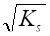
化学计量点后0.1%: [SH2+]
= 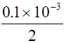
问此结果是否合理,错在哪里?如何改正?由计算结果推出此滴定突跃是多少? 能否准确滴定?
0664
实验室备有标准酸碱溶液和常用酸碱指示剂如甲基橙、甲基红、酚酞,另有广泛pH试纸和精密pH试纸。现有一未知一元弱酸可用碱标准溶液滴定,请用上述物品以最简单的实验方法测定该一元弱酸的解离常数Ka的近似值。
2301
某电解质MA(M2+,A2-)溶液,其浓度c(MA) = 0.10mol/L,则该溶液的离子强度为----( )
(A) 0.10mol/L (B) 0.30mol/L (C) 0.40mol/L (D) 0.60mol/L
2302
0.10mol/L M2A(M+,A2-)电解质溶液的离子强度为----------------------------------------( )
(A) 0.10mol/L (B) 0.30mol/L (C) 0.40mol/L (D) 0.60mol/L
2303
0.10mol/L MA(M+,A-)电解质溶液的离子强度为-------------------------------------------( )
(A) 0.10mol/L (B) 0.30mol/L (C) 0.40mol/L (D) 0.60mol/L
2304
0.10mol/L Na3PO4溶液,其离子强度为-------------------------------------------------------( )
(A) 0.10mol/L (B) 0.30mol/L (C) 0.40mol/L (D) 0.60mol/L
2305
根据质子理论,既可起酸的作用又可起碱的作用的溶剂称为----------------------------( )
(A) 拉平性溶剂 (B) 分辨性溶剂 (C) 两性溶剂 (D) 惰性溶剂
2306
根据酸碱质子理论,下列表述中正确的是----------------------------------------------------( )
(A) 对于所有的酸来说,H2O是一种拉平性溶剂 (B) H2O是一种惰性溶剂
(C) NH4+起弱酸的作用 (D) 醋酸根离子是醋酸的共轭酸
2307
将纯酸加入纯水中制成溶液,则下列表述中正确的是-------------------------------------( )
(A) 酸的浓度越低, 解离的弱酸的百分数越大
(B) 酸的"强"和"弱"与酸的物质的量浓度有关
(C) 强酸的解离百分数随浓度而变化
(D) 每升含1.0×10-7mol强酸(例如HCl),则该溶液的pH为7.0
2308
下列物质中属于两性物质的是-----------------------------------------------------------------( )
(A) H2CO3 (B) 氨基乙酸盐酸盐 (C) 氨基乙酸 (D) 氨基乙酸钠
2309
下列物质中属于酸的有_____, 属于碱的有_____, 属于两性物质的有______。(用符号A,B,…,表示)
(A) 吡啶 (B) 吡啶盐酸盐
(C) 六次甲基四胺[(CH2)6N4] (D) 六次甲基四胺盐酸盐
(E) 羟胺(NH2OH) (F) 盐酸羟胺
(G) 氨基甲酸(NH3+COO-) (H) 氨基甲酸钠
2310
某二元酸H2A的pKa1和pKa2分别为4.60和8.40,在分布曲线上H2A与HA-曲线交点pH为____,HA-与A2-曲线交点的pH为____,H2A与A2-的交点pH为____,HA- 达最大的pH 是____。
2311
含0.10mol/L HCl和0.20mol/L H2SO4的混合溶液的质子条件式是--------------------( )
(A) [H+] = [OH-]+[Cl-]+[SO42-] (B) [H+]+0.3 = [OH-]+[SO42-]
(C) [H+]-0.3 = [OH-]+[SO42-] (D) [H+]-0.3 = [OH-]+[SO42-]+[HSO4-]
2312
加 40 mL 0.15mol/L HCl溶液至60mL 0.10mol/L Na2CO3溶液中,该溶液的合理的简化质子条件是__________________________________________。
2313
用NaOH溶液滴定H3PO4至pH = 4.7时, 溶液的合理的简化质子条件是 ____________ ________________________________。
(H3PO4的pKa1~pKa3分别为2.12、7.20、12.36)。
2314
c(Na2CO3) = c的Na2CO3溶液的物料平衡方程式是______________________________。
2315
0.1mol/L NaCl溶液的质子平衡式是_____________________________________。
2316
0.1mol/L NaCl溶液的电荷平衡式是_____________________________________。
2317
NH4H2PO4 溶液中最主要的质子传递反应是_____________________________
(已知H3PO4的pKa1~pKa3分别为2.12、7.20、12.36,NH3的pKb是4.74)。
2318
某三元酸H3A的pKa1 = 3.96, pKa2 = 6.00, pKa3 = 10.02,则0.10mol/L H3A的pH是---( )
(A) 1.00 (B) 2.48 (C) 3.96 (D) 4.98
2319
某三元酸H3A的pKa1 = 3.96、pKa2 = 6.00、pKa3 = 10.02, 则 0.10 mol/L Na3A溶液的pH是-------( )
(A) 8.01 (B) 10.02 (C) 11.51 (D) 12.51
2320
以下溶液稀释10倍时,pH改变最大的是-------------------------------------------------( )
(A) 0.1mol/L NH4Ac (B) 0.1mol/L NaAc (C) 0.1mol/L HAc (D) 0.1mol/L HCl
2321
以下溶液稀释10倍时,pH改变最小的是-------------------------------------------------( )
(A) 0.1mol/L HAc (B) 0.1mol/L NH4Ac (C) 0.1mol/L NaAc (D) 0.1mol/L NH4Cl
2322
今有1L含0.1mol H3PO4和0.3mol Na2HPO4的溶液,其pH应当是----------------( )
(H3PO4的pKa1~pKa3分别为2.12、7.20、12.36)
(A) 2.12 (B) (2.12+7.20)/2 (C) 7.20 (D) (7.20+12.36)/2
2323
某1L含0.2mol Na3PO4和0.3mol HCl的溶液,其pH应当是------------------------( )
(H3PO4的pKa1~pKa3分别为2.12、7.20、12.36)
(A) 2.12 (B) (2.12+7.20)/2 (C) 7.20 (D) (7.20+12.36)/2
2324
今有三种溶液分别由两组分组成:
(a) 0.10mol/L HCl ~ 0.20mol/L NaAc
(b) 0.20mol/L HAc ~ 0.10mol/L NaOH
(c) 0.10mol/L HAc ~ 0.10mol/L NH4Ac
已知pKa( HAc) = 4. 74, pKa(NH4+) = 9. 26, 则这三种溶液pH大小的关系是______(用符号a、b、c表示)。
2325
为下列溶液选择计算[H+]或[OH-]的合理公式(请填写A,B等):
(1) 0.10mol/L三乙醇胺(pKb = 6.24) __________
(2) 0.10mol/L邻苯二甲酸氢钾(pKa1 = 2.95、pKa2 = 5.41) __________
(3) 0.10mol/L H2C2O4(pKa1 = 1.22、pKa2 = 4.19) __________
(4) 0.10mol/L苯甲酸(pKa = 4.21) __________
A. [H+] = 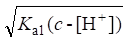 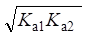
C. [H+] = 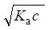 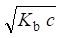
2326
给出计算下列各溶液[H+]的合理公式(仅用符号表示):
(A) 0.10mol/L 二氯乙酸(pKa = 1.30) ________________
(B) 0.10mol/L NH4Cl[pKb(NH3) = 4.74] ________________
(C) 0.10mol/L NaHSO4[pKa(HSO4-) = 1.99] ________________
(D) 1.0×10-4mol/L H3BO3(pKa = 9.24) ________________
2327
给出计算下列各溶液[H+]的合理公式(仅用符号表示):
(A) 0.04mol/L H2CO3(pKa1 = 6.38、pKa2 = 10.25) ________________
(B) 0.05mol/L NaHCO3 ________________
(C) 0.10mol/L 氨基乙酸(NH3+CH2COO-)(pKa1 = 2.35、pKa2 = 9.70) ________________
(D) 0.10mol/L 氨基乙酸盐酸盐(NH3+CH2COOHCl-) ________________
2328
请给出下列情形计算[H+]的合理公式:
(A) 0.1000mol/L HCl滴定0.1000mol/L Na2CO3至第一化学计量点时,
[H+] = _________________________
(B) 0.05000mol/L NaOH滴定0.05000mol/L H3PO4至第一化学计量点时,
[H+] = _________________________
(C) 0.1mol/L HAc ― 0.1mol/L H3BO3混合液,
[H+] = _________________________
(D) 0.1mol/L HCOONH4,
[H+] = _________________________
2329
下列表述中,正确的是[已知pKa(HAc) = 4.74,pKb(NH3) = 4.74]-------------------------( )
(A) 浓度相同的NaAc溶液和NH4Ac溶液的pH相同
(B) 浓度相同的NaAc溶液和NH4Ac溶液,前者的pH大于后者
(C) 各组分浓度相同的HAc-NaAc溶液和HAc-NH4Ac溶液,前者的pH大于后者
(D) 各组分浓度相同的HAc-NaAc溶液和HAc-NH4Ac溶液,前者的pH小于后者
2330
在下列溶液中缓冲容量最大的是____,缓冲容量最小的是____(填符号A,B,…)。
(A) 0.1mol/L HAc (B) 0.1mol/L HAc-0.1mol/L NaAc
(C) 1.0mol/L HAc-1.0mol/L NaAc (D) 0.1mol/L HCl
2331
将13.5g六次甲基四胺加到4.0mL 12mol/L HCl中,稀释至100mL,其pH为------( )
{pKb[(CH2)6N4] = 8.85, Mr[(CH2)6N4] = 140.0}
(A) 0.32 (B) 2.57 (C) 4.43 (D) 5.15
2332
下列物质可以用来直接配制标准缓冲溶液的是-------------------------------------------( )
(A) NaAc (B) Na2CO3 (C)Na2B4O7・10H2O (D) Na2HPO4・12H2O
2333
下列各组溶液中可用作标准缓冲溶液的是--------------------------------------------------( )
(A) 0.05mol/L 邻苯二甲酸氢钾 (B) 甲酸--NaOH
(C) 邻苯二甲酸氢钾-HCl (D) Na2B4O7-HCl
2334
下列各组溶液中可用作标准缓冲溶液的是--------------------------------------------------( )
(A) 饱和酒石酸氢钾 (B) 氨基乙酸-盐酸 (C) 三乙醇胺-盐酸 (D) 氨基乙酸-氢氧化钠
2335
下列各组物质中可用作标准缓冲溶液的是--------------------------------------------------( )
(A) HAc-NaAc (B) 六次甲基四胺 (C) 硼砂 (D) NH4Cl-NH3
2336
标准缓冲溶液是指_________________________________,其作用是_______________ _______________________________。
2337
缓冲溶液应有足够的缓冲容量,通常缓冲组分的浓度在____________之间。
2338
通常含有共轭酸碱对的溶液称为__________,它可抑制溶液______的变化。
2339
用六次甲基四胺配制的缓冲溶液时,其pH约为____。
2340
-da/dpH或db/dpH称为溶液的________,当____________,即当pH = ____ 时有最大值,其值为____。
2341
今欲配制pH = 5的缓冲溶液可选择__________配制。
2342
今欲配制pH约10的缓冲溶液可选用______________。
2343
六次甲基四胺(CH2)6N4的pKb = 8.85,则用六次甲基四胺缓冲溶液的缓冲范围应是pH____________。
2344
下列情形中,溶液的pH将发生什么变化(增大、减小或不变):
(1) 在50mL 0.1mol/L HF溶液中加入1g NaF __________
(2) 在50mL 0.1mol/L HAc溶液中加入1g NaAc __________
(3) 在50mL 0.1mol/L NH3溶液中加入1g NH4Cl __________
(4) 在50mL 0.1mol/L HClO4溶液中加入10mL 0.1mol/L HCl __________
2345
将0.1mol/L HAc + 0.1mol/L NaAc溶液稀释10倍后,则pH为_____ 。 [pKa(HAc) = 4.74]
2346
欲配制pH = 9的缓冲溶液,一般可选用________________体系。
2347
1.0mol/L NH4HF2溶液的pH为________。 [pKa(HF) = 3.18, pKb(NH3) = 4.74]
2348
现有一含0.2mol/L H3PO4和0.3mol/L NaOH的溶液,其pH应当是_______ 。
(H3PO4的pKa1~pKa3分别为2.12、7.20、12.36)
2349
欲配制pH = 9的缓冲溶液,下列两种物质中可通过加入盐酸来配制的是-----------( )
(A) 羟氨 NH2OH (Kb = 9.1×10-9) (B) NH3・H2O (Kb = 1.8×10-5)
2350
0.30mol/L H3PO4溶液与0.20mol/L Na3PO4溶液等体积混合,计算该缓冲溶液的pH(H3PO4的pKa1 ~pKa3分别为2.12、7.20、12.36)。
2351
某弱酸HY的Ka为8.5×10-6。在50.00mL 0.1000mol/L该酸溶液中需加入多少毫升0.1000mol/L NaOH溶液方能使溶液的pH为5.00?
2352
0.30mol/L NaH2PO4溶液与0.20mol/L Na3PO4溶液等体积混合,计算该缓冲溶液的pH(H3PO4的pKa1 ~pKa3分别为2.12、7.20、12.36)。
2353
今有pH = 5.00的HAc-Ac-缓冲溶液300mL,已知其总浓度c(HAc + Ac-) = 0.50mol/L,今加入300mL 0.040mol/L NaOH溶液,计算其pH。 (已知HAc的pKa = 4.74)
2354
0.20mol/L HCl与0.30mol/L Na2CO3溶液等体积混合,计算该溶液的pH。
(H2CO3的pKa1 = 6.38, pKa2 = 10.25)。
2355
某磷酸盐缓冲溶液,每升含0.080mol Na2HPO4和0.020mol Na3PO4。今有 1.0mmol有机化合物RNHOH在100mL上述磷酸盐缓冲溶液中进行电解氧化, 其反应如下:
RNHOH+H2O→RNO2+4H++4e-
当氧化反应进行完全后,计算缓冲溶液的pH。 (H3PO4的pKa1~pKa3分别为 2.12、7.20、12.36)。
2356
以0.100mol/L NaOH溶液滴定0.100mol/L某二元弱酸H2A溶液。已知当中和至 pH = 1.92时, x(H2A) = x (HA-);中和至pH = 6.22时, x (HA-) = x (A2-)。
计算: (1)中和至第一化学计量点时, 溶液的pH为多少?选用何种指示剂?
(2)中和至第二化学计量点时, 溶液的pH为多少?选用何种指示剂?
2357
今以某弱酸HA及其共轭碱A-配制缓冲溶液,已知其中[HA]= 0.25mol/L。 往上述 100mL缓冲溶液中加入5.0mmol固体NaOH后(忽略其体积的变化),溶液的pH = 4.60。 计算原缓冲溶液的pH(设HA的pKa = 4.30)。
2358
今用某弱碱B (pKb = 4.30)及其共轭酸BH+配制成pH = 9.40的缓冲溶液200mL, 向此缓冲溶液中加入30.0mmol固体NaOH后,溶液的pH = 10.0(忽略体积的变化)。计算原缓冲溶液中B和BH+的浓度。
2359
某分析工作者用NH3和NH4Cl制备pH = 9.49的缓冲溶液200mL。问:
(1) 该缓冲溶液中NH3和NH4Cl的平衡浓度之比为多少?
(2) 若向上述缓冲溶液中加入1.0 mmol固体NaOH(忽略体积变化)。欲使其pH的改变不大于0.15 pH,则原缓冲溶液中 NH3和NH4Cl 的最低浓度各为多少? (NH3的pKb = 4.74)
2360
若用0.1000mol/L KOH溶液分别滴定25.00mL 某H2SO4和HAc溶液,若消耗的体积相 等, 则表示这两种溶液中------------------------------------------------------------------------------( )
(A) [H+]相等 (B) c(H2SO4) = c(HAc) (C) c(H2SO4) = 2c(HAc) (D) 2c(H2SO4) = c(HAc)
2361
现有同体积的四种溶液
(1) 0.01mol/L NH4Cl-0.01mol/L NH3
(2) 0.1mol/L NH4Cl-0.1mol/L NH3
(3) 0.01mol/L HAc-0.01mol/L NaAc
(4) 0.1mol/L HAc-0.1mol/L NH3
分别加入0.05mL 1mol/L HCl引起pH变化最大的是---------------------------------( )
(A) (2) (B) (4) (C) (1)和(3) (D) (2)和(4)
2362
以下是一个试题及其解答,阅后请判定其结果正确与否,如有错误，指出错在哪里?
称取未知酸HA(Mr = 82.00)试样1.600 g,溶解并稀释至60.00mL,用0.2500mol/L NaOH 作电位滴定, 测得中和一半时溶液pH = 5.00,中和到化学计量点时pH = 9.00, 求w(HA)。
解: 中和到一半时[HA] = [A-], 故pKa = pH = 5.00。
设中和至化学计量点时用去V mL NaOH,则
c(NaA) = 0.2500×V/(60.00+V)
因[OH-] = 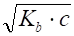 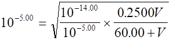
解得V = 40.00mL
w(HA) = 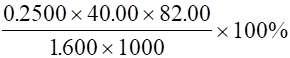
2363
酸碱指示剂的理论变色点是______,变色范围可用公式表示为__________。
2364
某酸碱指示剂HIn,当[HIn]/[In-] = 5时,看到的是纯酸色,当[In-]/[HIn] = 3时, 看到的是纯碱色。若该指示剂的解离常数为pKa,则变色范围是____________。
2365
已知甲基黄的pK(HIn) = 3.25,变色范围为2.9~4.0 (红-黄),则当指示剂分别显红色和黄色时,[HIn]/[In-]分别是____和____。
2366
将甲基红指示剂[K(HIn)=7.9×10-6]加入某未知的pH缓冲溶液中, 用分光光度法测得该溶液中指示剂的碱色与酸色之比为2.15:1,则溶液的pH为________。
2367
酸碱指示剂的解离平衡可表示为: HIn = H+ + In-
则比值[In-]/[HIn]是______________的函数。一般说来,看到的是碱色时,该比值为____;看到的是酸色时,该比值为_____;看到混合色时,该比值为________。
2368
什么是酸碱指示剂?简述酸碱指示剂的作用原理。
2369
通常有两类混合(酸碱)指示剂,一类是由两种或两种以上的指示剂混合而成;另一类由某种指示剂和一种惰性染料组成。试简要比较它们的异同点。
2370
强酸滴定强碱时,若浓度均增大10倍,则其pH突跃增大----------------------------------( )
(A) 1 (B) 2 (C) 10 (D) 不变化
2371
多元酸分步滴定时,若浓度均增加10倍,滴定pH突跃大小变化-------------------------( )
(A) 1 (B) 2 (C) 10 (D) 不变化
2372
现有50mL某二元酸H2X, c(H2X) = 0.1000mol/L,用0.1000mol/L NaOH 滴定。在加入25mL NaOH时,pH = 4.80;加入50mL NaOH,即在第一化学计量点时, pH = 7.15,则Ka2值为----------------------( )
(A) 5.62×10-10 (B) 3.2×10-10 (C) 8.4×10-9 (D) 7.1×10-8
2373
用强碱滴定弱酸,当酸的浓度一定时,酸愈强(Ka值愈大),它的共轭碱愈______, 滴定反应的完全程度愈____,突跃范围也愈____。
2374
用强碱滴定弱酸,当两种酸的浓度一定时,若弱酸愈弱(Ka值愈小),它的共轭碱愈______, 滴定反应的完全程度愈____,突跃范围也愈____。
2375
在强碱滴定强酸时,若酸和碱的浓度增大10倍,滴定pH突跃将______________; 反之若它们的浓度减小10倍,则滴定pH突跃将________________。
2376
在强碱滴定弱酸时,若酸和碱的浓度增大10倍,pH突跃范围将______________; 反之当它们的浓度减小10倍,则pH突跃范围将________________。
2377
在酸碱滴定中,研究滴定曲线的意义主要在于:
(1)______________________________________________________________
(2)______________________________________________________________
(3)______________________________________________________________
2378
用NaOH滴定一元弱酸HA,若NaOH和HA的浓度均增大10倍,则化学计量点前0.1% pH_________; 化学计量点pH____________;化学计量点后0.1% pH____________(指增加或减少多少)。
2379
一元弱酸(HA)滴定的终点误差可用公式Et = _______________________计算。 设DpH = pH终-pH计, Kt 为滴定反应常数, 则上式又可表示为 Et = _________________________ ____________。
2380
用同浓度强碱滴定弱酸突跃范围的大小与__________________有关, 若要能准确滴定(Et<0.2%),则要求满足_________________条件。
2381
用同浓度强酸滴定弱碱突跃范围的大小与__________________有关, 若要能准确滴定(Et<0.2%),则要求满足_________________条件。
2382
下列酸溶液能否用NaOH准确滴定或准确分步滴定(浓度均为0.1mol/L), 请在备择答案(A,B,…)中选择正确答案:
(1) 酒石酸(pKa1 = 3.04、pKa2 = 4.37) ________
(2) 柠檬酸(pKa1 = 3.13、pKa2 = 4.76、pKa3 = 6.60) ________
(3) 亚磷酸(pKa1 = 1.30、pKa2 = 6.60) ________
(4) 硼酸(pKa = 9.24)+苯甲酸(pKa = 4.21) ________
A. 能准确分步滴定
B. 能作为多元酸同时滴定,但不能分步
C. 第一步能准确滴定,但第二步不能滴定
D. 第一、二步能分步准确滴定,但第三步不能滴定
2383
磷以MgNH4PO4・6H2O形式沉淀,经过滤、洗涤后用适量HCl标准溶液溶解,而后以 NaOH标准溶液返滴定,选甲基橙为指示剂,这时磷与HCl的物质的量比n(P):n(HCl)为---------------------------------( )
(A) 1:3 (B) 3:1 (C) 1:1 (D) 1:2
2384
将PO43-以MgNH4PO4・6H2O形式沉淀,经过滤、洗涤后先用过量HCl标准溶液溶解, 而后以NaOH标准溶液返滴定,此时应选的指示剂是--------------------------------------------( )
(A) 甲基橙 (B) 石蕊 (C) 酚酞 (D) 百里酚酞
2385
今欲测定pH≈9的溶液的pH,下列溶液中适宜校正pH计(定位)的是--------------( )
(A) 0.050mol/L 邻苯二甲酸氢钾溶液
(B) 0.025mol/L KH2PO4-0.025mol/L Na2HPO4溶液
(C) 0.01mol/L 硼砂溶液
(D) 0.10mol/L NH3-0.10mol/L NH4Cl溶液
2386
试举两种标定NaOH溶液的基准物质:______________和_____________。
2387
举出两种标定HCl溶液的基准物质:______________和_____________。
2388
磷以MgNH4PO4・6H2O形式沉淀,经过滤、洗涤后用过量的HCl标准溶液溶解,以NaOH标准溶液返滴定至甲基橙变黄,此时磷与HCl的物质的量比 n(P):n(HCl)是________。
2389
下图是用蒸馏法测定铵盐的简单流程,试填写所需试剂、产物、现象及结果的计算。
┏━━━┓
指示剂┃ ┃
┗━━━┛
┏━━━┓ 滴定 │ ┏━━━━┓
↓ 加入┃ ┃ ↓滴定剂┃ ┃
┗━━━┛ ┗━━━━┛
┏━━┓ ┏━━┓ ┏━━━━━━━┓
┃试样┃――→ ┃ ┃―――――――→┃ ┃
┗━━┛蒸馏出 ┗━━┛吸收在H3BO3中 ┗━━━━━━━┛
┏━┓ ┏━┓
颜色变化 ┃ ┃色至┃ ┃色
┗━┛ ┗━┛
结果计算,w(NH4+) = __________________________.
2390
将0.300mol/L H3PO4溶液50.0mL与0.200mol/L Na3PO4溶液50.0mL混合。
(1) 以甲基红为指示剂,用0.100mol/LHCl溶液滴定至终点,需消耗HCl溶液多少毫升?
(2) 若改用0.400mol/LNaOH溶液滴定至百里酚酞为终点,需消耗NaOH溶液多少毫升?
2391
称取纯NaHCO3 1.008g,溶于适量水中,然后往此溶液中加入纯固体NaOH 0.3200g,最后将溶液移入250mL容量瓶中,稀释至标线。移取此溶液50.0mL,以0.100mol/L HCl溶液滴定。计算:(1)以酚酞为指示剂滴定至终点时,消耗HCl溶液多少毫升? (2)继续加入甲基橙指示剂滴定至终点时,又消耗HCl溶液多少毫升? [Mr(NaHCO3) = 84.00, Mr(NaOH) = 40.00]
2392
简述甲醛法测定铵盐的基本原理,要求写出反应式、滴定剂、指示剂及化学计量比等。
2393
磷可沉淀为MgNH4PO4・6H2O,沉淀经过滤、洗涤后可用过量HCl溶解以NaOH 返滴定,问:
(1) 此滴定应选甲基橙还是酚酞为指示剂,为什么?
(2) n(P)∶n(HCl)是多少?
2394
以双指示剂法进行混合碱的分析时,取两份体积相同的试液,第一份用酚酞作指示剂,消耗标准HCl溶液的体积为V1,第二份用甲基橙作指示剂,消耗HCl为V2, 试根据HCl体积的关系,判断混合碱的组成。
|
V1 V2 |
组成 |
|
V1 = V2 |
|
|
V1 = 0 |
|
|
2V1 = V2 |
|
|
2V1>V2 |
|
|
2V1<V2 |
|
2395
以双指示剂法进行混合碱的分析时,设滴定至酚酞变色时,消耗HCl 标准溶液的体积为V1,继续滴定至甲基橙变色时,又消耗HCl溶液的体积为V2, 试根据HCl溶液的体积判断混合碱的组成。
|
V1 V2 |
组成 |
|
V1 = 0 |
|
|
0 = V2 |
|
|
V1 = V2 |
|
|
V1 > V2 |
|
|
V1 < V2 |
|
2396
试举一种配制不含CO32-的NaOH溶液的方法。
2397
乙醇作为溶剂时的质子自递反应为________________, 在乙醇溶液中,最强的碱是_____________。
4301
简述下列化学家的主要贡献
布朗斯特德－劳莱（J.N.Brfnsted-T.M.Lowry）____________________________
德拜－尤格尔（P.Debye-W.Hückel） ___________________________________
能斯特（H.W.Nernst）________________________________________________
路易士（G.N.Lewis）_________________________________________________
4302
指出下列公式中各符号的意义
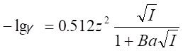
4303
0.002 mol/L CuCl2 + 0.002 mol/L (NH4)2SO4 + 0.002 mol/L Ga(NO3)3溶液的离子强度为______。
4304
在下列关于活度系数的表述中正确的是………………………………………………( )
在离子强度0~0.1mol/L范围内：( 1 )随离子强度增加而减少；( 2 )随离子电荷增加而减少；( 3 )随水合离子半径降低而减小。
( A ) (1) ( B ) (1) 和 (2) ( C ) (2) 和 (3) ( D ) (1)、(2) 和 (3)
4305
计算出下列溶液的离子强度：
( 1 ) 0.002 mol/L La(IO3)3 ___________________________。
( 2 ) 0.002 mol/L CuSO4 ______________________________。
4306
0.25 mol/L某弱酸HA溶液的pH为3.20,该酸的解离常数是________ 。
4307
某一弱酸HA试样用同浓度NaOH溶液滴定，加入10.00 mL NaOH后，pH为5.70。若滴定至化学计量点时，共需30.00 mL NaOH。该酸的解离常数是_____________________ 。
4308
称取0.3600g苯甲酸(C7H6O2)试样溶于180 mL水，加入10.00mL 0.08690 mol/L NaOH，然后，将其用水稀释至200.0 ml。测得该溶液25℃时pH为3.82。试计算苯甲酸的解离常数。(已知Mr (C7H6O2)=122.12)
4309
用NaOH溶液滴定某一元弱酸HA，滴定至化学计量点时，需37.20 mLNaOH。在该点时，加入18.60 mL与NaOH同浓度的HCl溶液，测得其pH为4.30，试计算HA的Ka _________。
4310
取50.0mL一份0.120mol/L某一元弱酸HA，用0.200mol/L NaOH溶液滴定。加入17.5 mL碱以后，溶液的pH为4.80。试计算HA的Ka。
4311
某0.20 mol/L一元胺RNH2溶液的pH为8.42，该一元碱的Kb是多少？
4312
现有25.0mL某弱酸HA溶液用0.100mol/LNaOH溶液滴定，加入17.5mL NaOH后，溶液的pH＝5.80。试计算该弱酸HA的解离常数Ka。
4313
实验测得0.100mol/L HCOONa溶液的pH为8.34，试计算HCOOH的解离常数。
4314
试计算0.070mol/L AlCl3溶液的pH以及各种分子和离子的浓度，已知
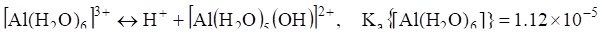
4315
已知pKb(C6H5CH2NH2)=4.65，给出苯胺(C6H5CH2NH2)与HCl之间反应的平衡常数，______________ 。
4316
在200 mL 0.100 mol/L HAc-1.0×10-4 mol/L溴甲酚蓝指示剂[pK(HIn)=4.9]溶液中，加入多少毫升1.00mol/L NaOH溶液才能使［HIn］/［In-］= 1/10 ? 已知pKa(HAc) = 4.74。
4317
某酸碱指示剂HIn在其有1/5转变成离子形式时发生颜色变化，若颜色变化时的
pH = 6.40，试计算指示剂的解离常数Ka(HIn)，_______________________。
4318
在200mL 0.100mol/L HAc-1.0×10-4mol/L溴甲酚蓝指示剂[pKa(HIn)=4.9]溶液中，加入多少毫升1.00mol/L NaOH溶液才能使［HIn］/［In-］=10/1 ? [已知pKa(HAc)=4.74]
4319
写出下列溶液的质子平衡方程式：
(1) H3PO4 _________________________________________。
(2) NaHCO3 ________________________________________。
4320
写出下列溶液的质子平衡方程式:
(1) NH4H2PO4 ____________________________________。
(2) NaAc ________________________________________。
4321
写出下列溶液的质子平衡方程式:
(1) Na2HAsO4 ______________________________________。
(2) (NH4)2HPO4 ____________________________________。
4322
对于某含H2O、H+、OH-、ClO4-、Fe(CN)63-、CN-、Fe3+、Mg2+、HCN、NH3和NH4+溶液，电荷平衡方程式是____________________________________________。
4323
CaF2溶液的电荷平衡方程式(溶液中有Ca2+、F-、和CaF+等离子存在)是____________________________。
4324
(1)写出CaCl2溶液的物料平衡方程式，若溶液中以物种Ca2+和Cl-存在：_________________________。
(2)写出CaCl2溶液的物料平衡方程式，若溶液中以物种Ca2+、CaCl+和Cl-存在：_____________________。
4325
写出某含H+、OH-、Ca2+、HCO3-、CO32-、Ca(HCO3)+、Ca(OH)+、K+和ClO4-溶液的电荷平衡方程式：______________________________________________。
4326
(1)写出饱和CaF2溶液的物料平衡方程式，若反应为
CaF2(s) = Ca2+ + 2F- F- + H+ = HF(aq)
___________________________________________________________。
(2)写出CaF2溶液的物料平衡方程式，若在上述反应之外还发生下列反应: HF(aq) + F- = HF2-
____________________________________________________________。
4327
写出Ca3(PO4)2溶液的物料平衡方程式，若溶液中存在物种Ca2+、PO43-、HPO42-、H2PO4-和H3PO4 。__________________________________________________________。
4328
写出某含CaCO3和KClO4的水溶液的电荷平衡方程式。 ____________________________________________。
4329
等体积混合pH为2.00和3.00的HCl溶液，所得溶液的pH为 ___________________。
4330
现有一醋酸溶液，若有3.0%的醋酸解离，试问该醋酸溶液的浓度是多少？已知Ka(HAc)=1.8×10-5
4331
计算0.0100 mol/L H2SO4溶液中各物种的浓度， 已知H2SO4 的pKa2=1.2×10-2
4332
血液试样中总二氧化碳含量可通过酸化试样测量CO2的体积进行测定。今测得某血液试样中CO2总浓度为28.5 mmol/L，在37℃时该血液的pH为7.48。试问该血液试样中HCO3-和CO2的浓度各是多少？ (已知H2CO3的Ka1=7.9×10-7，Ka2=1.3×10-10)
4333
今将5.00 mL 0.100 mol/L NaOH 溶液加入某一含204 mg KH2PO4的溶液中，用水稀释至200mL，试计算所得溶液的pH 。 [已知H3PO4的pKa1=2.12、pKa2=7.21、pKa3=12.0，Mr(KH2PO4)=136.09]
4334
若将25mL 0.20 mol/L NaOH溶液加入20mL 0.25 mol/L 硼酸溶液中，所得溶液的pH是多少？ [已知Ka (H3BO3)=6.4 ×10-10]
4335
将112 mL 0.1325 mol/L H3PO4和136 mL 0.1450 mol/L Na2HPO4混合，试计算所得混合溶液的pH和缓冲容量。 (已知磷酸的pKa1 = 2.12，pKa2 = 7.21，pKa3 = 12.0)
4336
将pH为2.00的强酸溶液和pH为13.00的强碱溶液等体积混合，所得溶液的pH是_________________。
4337
现有pH分别为2.00的强酸溶液和13.00的强碱溶液等体积混合，其pH为………( )
( A ) 5.5 ( B ) 6.5 ( C ) 11.0 ( D ) 12.65
4338
0.010 mol/L 邻苯二甲酸[C6H4(COOH)2]溶液的pH [已知C6H4(COOH)2的Ka1=1.2×10-3,
Ka2=3.0×10-6 ]为_________________________________________________。（写出计算式）
4339
将羟胺和盐酸各0.10 mol加入500 mL水中，所得溶液的pH [已知Kb(HONH2) = 1.3 ×10-6] 是_____________________________________________。(要求写出计算式)
4340
计算0.200 mol/L NH4NO3溶液的pH及各种离子和分子的浓度，已知pKa(NH4+) = 9.25。
4341
0.010 mol/L 邻苯二甲酸二钾溶液的pH [已知C6H4(COOH)2的Ka1=1.2 ´ 10-3, Ka2=3.9 ´ 10-6 ]是______________________________________________。(要求写出计算式)
4342
当溶液的pH增加1.60单位时，溶液的［H+］改变多少？
_______________________________________________________。
4343
如果一溶液的[H+]= 10 [OH-]，那么该溶液的pH是
( A ) 6.0 ( B ) 6.5 ( C ) 7.5 ( D ) 8.0
4344
0.10 mol/L HIO3溶液的pH [已知Ka(HIO3) = 2 ´ 10-1] 是 ______________________。(要求写出计算式)
4345
某有机胺RNH2的pKb为4.20，现有0.20 mol/L该有机胺溶液，其pH是_________（要求写出计算式)
4346
0.25 mol/L盐酸吡啶(C5H5NH+Cl-)溶液的pH [已知Kb(C5H5N) = 1.7 ´ 10-9]是：____________________________________________。(要求写出计算公式)
4347
试计算将25.0 mL 0.0840 mol/L NH3溶液和20.0 mL 0.1050 mol/L HAc混合所得溶液的pH。[已知pKa(NH4+) = 9.26，pKa(HAc) = 4.74]
4348
将下列溶液各75.0 mL混合：0.500 mol/L NH3 ，0.0500 mol/L HCl，0.100 mol / L NH4Cl，试计算所得溶液的pH。[已知pKa(NH4+) = 9.26]
4349
计算将4.92 g NaAc溶解于200 mL 0.200 mol/L HCl溶液中制成的缓冲溶液的pH。设最终的体积V最终 = 200 mL。[已知Ka(HAc) = 1.8 ´10-5，Mr(NaAc) = 82.03]
4350
今将10.70 g NH4Cl加入200 mL 0.250 mol/L NaOH溶液中，试计算所得缓冲溶液的pH。
[已知pKa (NH4+) = 9.26，Mr (NH4Cl) = 53.49 ]
4351
由0.20 mol / L邻苯二甲酸(H2P)和0.10 mol / L邻苯二甲酸氢钾(KHP)构成的溶液的pH [已知C6H4(COOH)2的Ka1 = 1.2 ´ 10-3，Ka2 = 3.9 ´ 10-6]是____________。(写出计算式)
4352
设某EDTA三钠盐溶液的浓度为0.050 mol/L，则该溶液的pH为__________________。
[已知EDTA(H4Y)的Ka1 = 1.0 ´ 10-2，Ka2 = 2.2 ´ 10-3，Ka3 = 6.9 ´ 10-7，Ka4 = 5.5 ´ 10-11]
4353
设某EDTA二钠盐(Na2H2Y)溶液的浓度为c mol/L，则该溶液的pH可按何种公式计算……………( )
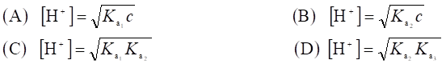
4354
设某EDTA三钠盐(Na3HY)溶液的浓度为c mol / L，则该溶液的pH可按何种公式计算……………( )
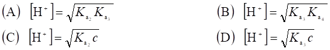
4355
配制1L pH = 6.90的缓冲溶液需0.100 mol / L H3PO4和0.100 mol/L NaOH各多少毫升？
(已知磷酸的pKa1 = 2.12，pKa2 = 7.21，pKa3 = 12.0)
4356
在250 mL 0.100 mol/L NH3溶液中加入多少克NH4Cl才能使［H+］增大100倍？
[已知Kb(NH3)=1.8 ´ 10-5，Mr(NH4Cl) = 53.49]
4357
对于50 mL 0.100 mol/L HAc溶液，在下列处理中哪一种处理能使溶液的pH增加最大？试通过计算加以说明。(1) 加水稀释至1L；(2) 加入20.00 mL 0.0500 mol/L NaOH，(3) 加入0.082 g NaAc。[已知pKa(HAc) = 4.74，Mr(NaAc) = 82.03]
4358
用强酸滴定弱碱时，在哪一点缓冲容量达到极大值？____________________。
4359
在200 mL 0.100 mol/L HAc溶液中加入多少克NaAc才能使其pH增大2个单位？
[已知Ka(HAc)=1.8 ´ 10-5，Mr(NaAc×3H2O) = 136.00]
4360
为配制pH = 4.50，离子强度为0.250 (用活度)的缓冲溶液需向500 mL 0.100 mol/L HAc溶液中加入多少毫升0.100 mol/L NaOH和多少克NaCl ?
[已知pKa(HAc) = 4.74， a(Ac-) = 450 pm，Mr(NaCl) = 58.44]
4361
在1L pH = 10.00，每毫升含21.4 mg NH3的缓冲溶液中，有多少克NH4Cl？
[已知pKa = 9.26，Mr(NH3) = 17.03，Mr(NH4Cl) = 53.49]
4362
将0.5mol/L的甘氨酸(H2NCH2COOH)溶液与0.25mol/L的HCl溶液等体积混合，溶液的pH是多少？(已知甘氨酸的pKa1= 2.35，pKa2= 9.78) __________________________。
4363
现有一甘氨酸 (H2NCH2COOH)-NaOH缓冲溶液，其物质的量之比为2:1时，溶液的pH是多少？(已知甘氨酸的pKa1 = 2.35，pKa2 = 9.78)__________________________。
4364
现有两种HAc-NaAc溶液，每种溶液的浓度均为c(HAc + Ac- ) = 0.100 mol/L，其pH分别为4.00和5.00。若将两种溶液等体积混合，试问所得溶液的pH是多少？
[已知pKa( HAc ) = 4.74]
4365
制备500 mL pH = 1.62 的缓冲溶液，需取NaHSO4和Na2SO4各多少克？
设c(NaHSO4 + Na2SO4)=1.00 mol/L。
[已知H2SO4的Ka2 = 1.2 ´ 10-2，Mr(Na2SO4) = 142.04，Mr(NaHSO4)=120.06]
4366
试比较下列三种缓冲溶液缓冲容量的大小：( 1 ) 0.010 mol/L HAc - 0.10 mol/L NaAc; (2) 0.010 mol/L HAc - 0.0040 mol/L NaAc; (3) 0.010 mol/L HAc - 0.0010 mol/L NaAc。通过比较可得到什么结论？
4367
将1.10g NaHCO3与3.18 g Na2CO3 溶于水并稀释至500 mL制成缓冲溶液，计算其pH；现加入1.00 mL 1.00mol/L HCl溶液，则该缓冲溶液的pH将是多少？
[已知H2CO3的Ka1=4.2´10-7, Ka2=4.8´10-11。Mr(Na2CO3)=105.9, Mr(NaHCO3)=84.01]
4368
三(羟甲基)氨基甲烷［(HOCH2)3CNH2 - Tris或THAM］是生物化学中经常用来配制缓冲溶液的一种弱碱，其Kb为1.2 ´ 10-6，试问若配制1 L pH为7.40的缓冲溶液需取多少克THAM与100 mL 0.50 mol / L HCl溶液相混合？[Mr (THAM)=121.1]
4369
试计算180 mL 0.500 mol/L NaHSO4-0.500 mol/L Na2SO4缓冲溶液的缓冲容量
________________________________________________________(写出计算式)。
4370
为配制pH = 4.00的缓冲溶液，在250 mL 0.100mol/L酒石酸溶液中应加入多少克NaOH？[已知酒石酸的Ka1=1.1 ´ 10-3，Ka2=6.9 ´ 10-5，Mr(NaOH)=40.00 ]
4371
某血液试样中磷酸盐的总浓度经分光光度法测定为3.0 ´ 10-3 mol/L，若该血液试样的pH为7.45。试问血液中H2PO4-和HPO42-的浓度各是多少？
（已知H3PO4的Ka1=1.1 ´ 10-2，Ka2=7.5 ´ 10-8，Ka3=4.8 ´ 10-13)
4372
将多少毫升1.00 mol/L NaOH溶液加入到含0.9004 g 草酸的溶液中，并稀释至100 mL，可得到pH为4.43的缓冲溶液？[已知H2C2O4的pKa1=1.42，pKa2=4.30，Mr(H2C2O4)=90.04]
4373
由HA-A-组成的缓冲溶液其缓冲容量
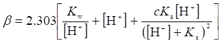
设缓冲对HA-A-的分析浓度为c ，且c > 10-3 mol/L，试证明
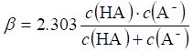
4374
由HA-A-组成的溶液，当c ( HA + A- )>10-3 mol/L时，其缓冲容量可表示为………( )
(
A ) (
B ) 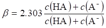
(
C ) 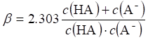 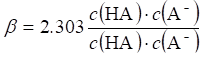
4375
将0.200 mol/L NaOH、0.160 mol/L HCl、0.120 mol/L Na2HPO4和0.120 mol/L NaH2PO4溶液等体积混合，试计算所得溶液的pH。(已知磷酸的pKa1 = 2.12，pKa2 =7.21，pKa3 = 12.0)
4376
计算0.225 mol/L Na2SO3溶液中的pH及各种离子和分子的浓度。（已知H2SO3的pKa1=1.89，pKa2=7.25)
4377
将相当于0.600 mol HCl、0.0500 mol H3PO4、0.0800 mol NaH2PO4、0.350 mol Na3PO4和0.110 mol NaOH的几种溶液混合在一个试剂瓶中，试计算所得溶液的pH。(已知磷酸的pKa1 = 2.12，pKa2 = 7.21，pKa3 = 12.36)
4378
试计算0.200 mol/L AlCl3溶液的pH。 (写出计算式)
已知反应 [Al(H2O)6]3+=H++[Al(H2O)5(OH)]2+ Ka{[Al(H2O)6]3+}=1.12×10-5
4379
甲基橙的理论变色点为………………………………………………………………（ ）
( A ) 3.1 ( B ) 3.4 ( C ) 4.4 ( D ) 5.2
4380
名词解释
酸碱指示剂的理论变色点 ___________________________________________。
滴定分析法 _______________________________________________________。
终点误差 _________________________________________________________。
基准物质 _________________________________________________________。
4381
今有一含2.00 mmol肼和16.00 mmol NaHCO3的水溶液，现用碘标准溶液进行滴定
( N2H4 + 2I3- + 4HCO3- = N2 + 6I- + 4H2CO3 )，设化学计量点时溶液的体积为50.00 mL，试问在化学计量点时溶液的pH是多少？(已知H2CO3的pKa1=6.38，pKa2=10.32)
4382
计算将50.0 mL 0.0500 mol/L HCl溶液和50.0 mL 0.02500 mol/L Ba(OH)2溶液混合所得溶液的pH。
4383
计算100mL 0.200 mol/L NaOH和150 mL 0.400 mol/L HAc 混合所得溶液的pH。[已知pKa(HAc) = 4.74]
4384
假定用指示剂判定终点的ΔpH = 0.2，若多元酸( HnA )的Ka1≥ 10-8，当Ka1/ Ka2 ≥ 104时，Et可≤____________；Ka1 / Ka2 ≥ 10-5时，Et可 ≤_______________
4385
下列表述是否正确(回答是与否)：若用Na2CO3标定HCl溶液，其中含有少量NaHCO3，则测得的HCl的浓度将比真实值大。____________________________。
4386
下列表述是否正确：若标定HCl所用的基准物质含有不与HCl反应的杂质，则测得的HCl的浓度将比真实值小。_______________________。
4387
若标定HCl所用的基准物质含有不与HCl反应的杂质，则测得的HCl的浓度将比真实值___________ (大、小或相同)，因为______________________________________________.
4388
若用Na2CO3标定HCl溶液，其中含有少量NaHCO3，则测得的HCl的浓度将比真实值______________ (大、小或相同)。试简述其理由。
4389
今用NaOH滴定一弱酸HA试样，为中和此HA试样，共需40.0 mL NaOH溶液，在加入8.0 mL碱后，被滴定试样的pH为5.14。试计算HA的解离常数Ka。
4390
现有0.3800 g某一仅含Na2CO3和NaHCO3的试样，其物质的量之比为1:3，将其溶解于水，用0.1000 mol/L HCl标准溶液滴定。试分别计算滴定至酚酞和甲基橙终点时，所需HCl溶液的体积V酚酞和V甲基橙。[已知Mr(Na2CO3)=105.99，Mr(NaHCO3)= 84.01 ]
4391
溶液A含有0.2650 g Na2CO3和0.1260 g NaHCO3 ,今用0.2000 mol/L HCl滴定。若分别以(1) 酚酞和 (2) 甲基橙为指示剂，各需盐酸多少毫升？
[已知Mr(Na2CO3)=105.99，Mr(NaHCO3)=84.01]
4392
现有某一仅含NaOH和Na2CO3的试样0.2400 g，其物质的量之比为2:1。将其溶解于水，用0.1000 mol/L HCl标准溶液滴定。试分别计算滴定至用酚酞和甲基橙终点时，所需HCl溶液的体积V酚酞和V甲基橙。[已知Mr(NaOH)=40.00，Mr(Na2CO3)=105.99]
4393
苯甲醛( C6H5CHO )试样0.8242g与25.00 mL 0.6 mol/L盐酸羟胺溶液混合，释放出的HCl需用15.12 mL 0.5020 mol/L NaOH溶液滴定，试计算试样中C6H5CHO的质量分数。
已知 Mr(C6H5CHO)=106.12，反应式如下：
C6H5CHO ＋ H2NOH・HCl = C6H5CH==NOH + H2O + HCl
HCl + NaOH = NaCl + H2O
4394
鸟嘌呤(2 -氨基- 6 -羟基-嘌呤) [ M (C5H5N5O ) = 151.13 g / mol ]不溶于水，但溶于酸。试根据下列实验数据计算试样中鸟嘌呤的质量分数：称取0.1650 g试样，溶于25.00 mL 0.1000 mol/L HCl溶液中，过量的酸需用15.32mL 0.1000 mol/L NaOH溶液滴定，已知鸟嘌呤与HCl反应计量比为1:1。
4395
称取0.3228 g 化学纯某二元有机酸，需42.67 mL 0.1008 mol/L NaOH溶液才能完全中和，试计算该酸的摩尔质量。
4396
以甲基橙为指示剂，用NaOH滴定HCl时，终点颜色变化是 ___________________，用HCl滴定NaOH时，终点颜色变化是 __________________________________。
4397
下列表述是否正确(回答是与否)：今用标准溶液A滴定某溶液B，令V和V0分别为滴定和空白滴定时溶液A的体积。如果误用V代替校正值( V - V0 )来计算溶液B的浓度，那么算得的浓度将大于真实值。
4398
一氢氧化钠溶液因吸收了大气中的CO2被Na2CO3污染，当以甲基橙为指示剂时测得其浓度为0.1000 mol/L，以酚酞为指示剂时测得其浓度为0.0990 mol/L。试问在1 L该溶液中有多少克NaOH和Na2CO3。[已知 Mr(NaOH)=40.01， Mr(Na2CO3)=105.99]
4401
取25.0g某固体试样置于一密闭的玻璃钟罩下，同时置一内盛100.0 mL NaOH的小皿以吸收CO2，48 h后，取25.00 mLNaOH，以酚酞作指示剂，需用12.17 mL 0.1250 mol / L HCl溶液滴定。另作一份空白(不放置该固体)测定，需HCl溶液23.31 mL。试计算在细菌作用下，该固体挥发CO2的速率。[以每克每小时多少毫克CO2计，已知Mr(CO2)=44.01 ]
4402
试根据下列实验数据计算试样中苯酚[Mr(C6H5OH)= 94.11 ]的质量：含苯酚试样溶于一惰性溶剂中，用过量的乙酐乙酰化，然后加水使过量的乙酐水解，溶液用8.12 mL 0.5040 mol/L NaOH乙醇溶液滴定。相同体积的乙酐需18.37 mL NaOH溶液作空白测定，反应式如下：
(CH3CO)2O + C6H5OH = CH3COOC6H5 + CH3COOH
(CH3CO)2O + H2O = 2CH3COOH CH3COOH + OH- = CH3COO- + H2O
4403
某一元有机酸的Ka为6.7 ´ 10-4，当将100g该酸溶于1 L水中时有3.5%解离。该酸的摩尔质量是多少？
4404
取100.0mL天然水样，用0.0250 mol/LHCl标准溶液滴定至酚酞终点时，需HCl溶液2.80mL，滴定至甲基橙终点时，需HCl溶液29.60 mL。试计算天然水样中CO32-和HCO3-的质量浓度。[已知Mr(CO32-)= 60.01，Mr(HCO3-)= 61.02 ]
4405
现有某试样0.2528 g，以酚酞作指示剂，用0.0998 mol/L HCl标准溶液滴定，需HCl溶液14.34 mL；以甲基橙作指示剂，需HCl溶液35.68 mL。试问该试样由NaOH、Na2CO3和NaHCO3中的哪些组分组成？其质量分数各是多少？ 下列数据可供选用：Mr(NaOH)=40.01, Mr(Na2CO3)=105.99, Mr(NaHCO3)= 84.01 )
4406
工厂大气中SO2的测定可按下列方法进行：以10 L/min的速度吸入一含H2O2的瓶中。30 min后产生的H2SO4 ( SO2 + H2O2 = 2H+ + SO42- )需用5.62 mL 0.01000 mol/L NaOH溶液滴定。试计算大气中SO2的体积分数，设r (SO2)=2.86 mg/mL。已知 Mr(SO2)=64.06
4407
在药物的制备中，硼酸的测定可按下列方法进行：将试样灰化，除去有机物，再溶解于H2SO4，中和该溶液，加入CH3OH和H2SO4，将生成的硼酸甲酯蒸馏进一NaOH溶液。然后，除去同时蒸出的甲醇，中和溶液，加入甘露糖醇，生成甘露糖醇－硼酸配合物，使硼酸转变为强酸，用NaOH标准溶液滴定。现某试样0.8755 g需14.75 mL 0.1075 mol/L NaOH溶液滴定。试计算试样中H3BO3的质量分数。已知Mr(H3BO3)=61.85
4408
为制备pH = 9.30的缓冲溶液，在200 mL 0.600 mol/L NH3溶液中需加入多少克NH4Cl？
[已知pKa(NH4+)=9.26，Mr(NH4Cl)=53.49]
4409
试计算0.10 mol/L三氯乙酸溶液的pH，若溶液中还含有0.10 mol/L三氯乙酸钠，pH又是多少？ [已知Ka(Cl3CCOOH)=0.60]
4410
为配制100 mL pH=5.00的缓冲溶液，应按什么体积(mL)将0.100 mol/L某弱酸HA溶液和0.0500 mol/L NaOH溶液混合？设Ka(HA)=5.0 ´ 10-5。
4411
分别从酸HA及其共轭碱NaA配制成pH为5.00和6.00两种缓冲溶液X和Y，设两种溶液中HA的浓度均为0.500 mol/L。若将这两种溶液等体积混合，所得溶液的pH是多少？设Ka(HA)=1.00 ´ 10-5。
4412
现有0.2000 g某一仅含Na2CO3和NaHCO3的试样，用0.1000 mol/L HCl标准溶液滴定至甲基橙终点时，需HCl溶液24.25 mL，试计算Na2CO3和NaHCO3的质量分数。[已知Mr(Na2CO3)= 105.99，Mr(NaHCO3)=84.01]
4413
在1 L 0.100 mol/L NH3溶液中，加入多少毫升2.00 mol/L HCl溶液方能使制成的缓冲溶液的pH为9.00？ 已知pKa(NH4+)=9.26。
4414
某缓冲溶液X每升含有1.00 mol HAc和1.00 mol NaAc，为使500 mL X溶液的pH提高1单位，应在其中加入多少克NaOH？ [已知Ka(HAc)=1.8 ´ 10-5，Mr(NaOH)=40.00]
4415
今用NaOH处理一(NH4)2SO4溶液，试问该溶液的pH应为 _________________时，才能使99.95% NH4+转变为NH3？ 已知pKa(NH4+)=9.26。(写出算式)
4416
向100mL 0.100 mol/L HAc-0.100 mol/L NaAc缓冲溶液中，加入0.010 mol固体NaOH。试计算溶液的［H+］和pH改变多少？ [已知pKa(HAc)=4.74]
4417
现有一HAc-NaAc缓冲溶液，其[ H+ ]为9.0 ´ 10-6mol/L，今将10.0 mmol HCl加入1 L该溶液中时，[H+]变为1.0 ´ 10-5mol/L，试计算原缓冲溶液中HAc和NaAc的浓度。 [已知Ka(HAc)=1.8 ´ 10 �C5 ]
4418
现由某弱酸HX ( pKa = 5.30 )及其共轭碱NaX配制pH为5.00的缓冲溶液。若在100 mL缓冲溶液中加入10 mmol HCl，试向最初缓冲溶液的浓度需多大时才能因酸的加入而使溶液的pH只改变0.20单位？
4419
为配制pH = 7.00的缓冲溶液，应在40.0 mL 0.100 mol/L H3PO4溶液中加入多少毫升0.500 mol/L NaOH溶液？(已知磷酸的pKa1=2.12，pKa2=7.21，pKa3=12.0)
4420
名词解释
酸碱指示剂的理论变色范围 _____________________________________________。
滴定突跃 _____________________________________________________________。
分布系数 _____________________________________________________________。
标准溶液 _____________________________________________________________。
4421
有两种总浓度相等的HAc-NaAc溶液，已知二者的缓冲容量b1 > b2，以下表述正确的是---------------（ ）
( A ) 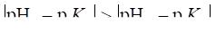 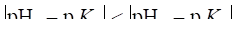
( C ) 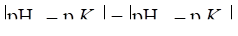 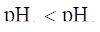
4422
有甲乙两种总浓度相等的NH3-NH4Cl缓冲溶液，甲：pH = 9.5：乙：pH = 10.0，那么甲的缓冲容量 _________于乙。如果在乙中加入NH4Cl，使其pH降至9.5，那么，此时甲的缓冲容量 ____________于乙( NH3：pKb = 4.74 )。(答：大或小 )
4423
欲配制pH = 5.00，缓冲容量b = 0.28 mol / L的六次甲基四胺[ (CH2)6N4：Kb = 1.4 ´ 10-9；Mr = 140.19 ]缓冲溶液200 mL，试问需要六次甲基四胺多少克？浓盐酸(浓度为12mol/L )多少毫升？
4424
欲配制500 mL离子强度I = 0.020的硼砂缓冲溶液。试问：
( 1 ) 需硼砂 ( Na2B4O7・10H2O：Mr = 381.37 )多少克？
( 2 )此缓冲溶液的pH和缓冲容量是多少？ [ H3BO3：Ka = 5.8 ´ 10-10；I = 0.020，γ(H2BO3-) = 0.870 ]
4425
溶解适量的NaHSO4和Na2SO4，当溶液中c(HSO4-) = c(SO42-)=0.10 mol/L时，求溶液的pH 。( H2SO4的Ka2=1.2 ´ 10-2 )
4426
依据下列情况配制缓冲溶液：
( 1 ) 为使25mL pH = 5.0的溶液中加入1 mmol HCl或NaOH时，pH改变不大于0.2单位，需加入(CH2)6N4 ___________________ g，1 mol/L 的HNO3 _________________ mL；
( 2 ) 已知溶液中c(HNO3) = 0.1 mol/L，欲调至pH = 5.0，且β= 0.2 mol/L，1 L此溶液中应加 (CH2)6N4 ______________ g，补加1 mol/L HNO3 ________________ mL。
{Mr[(CH2)6N4]=140.2 pKb[(CH2)6N4]= 8.7}
4427
一元弱酸HA的平衡常数表达式为： Ka = __________、 KaM = ___________、 Kac = _____________ 。
4428
NH3的平衡常数表达式可写成：Kb = ______________、 KbM = ______________、 Kbc = _____________ 。